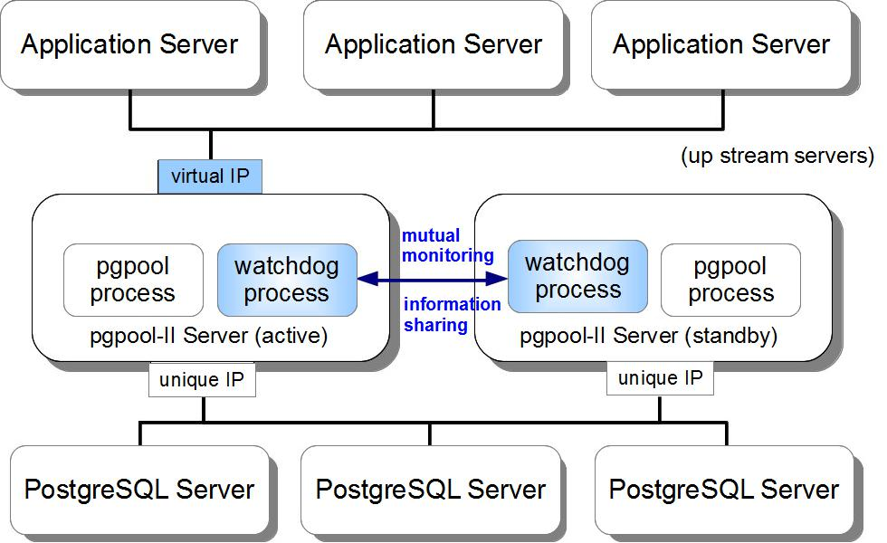

pgpool-II 是一个位于 PostgreSQL 服务器和 PostgreSQL 数据库客户端之间的中间件，它提供以下功能：
pgpool-II 保持已经连接到 PostgreSQL 服务器的连接， 并在使用相同参数（例如：用户名，数据库，协议版本） 连接进来时重用它们。 它减少了连接开销，并增加了系统的总体吞吐量。
pgpool-II 可以管理多个 PostgreSQL 服务器。 激活复制功能并使在2台或者更多 PostgreSQL 节点中建立一个实时备份成为可能， 这样，如果其中一台节点失效，服务可以不被中断继续运行。
如果数据库进行了复制（可能运行在复制模式或者主备模式下）， 则在任何一台服务器中执行一个 SELECT 查询将返回相同的结果。 pgpool-II 利用了复制的功能以降低每台 PostgreSQL 服务器的负载。 它通过分发 SELECT 查询到所有可用的服务器中，增强了系统的整体吞吐量。 在理想的情况下，读性能应该和 PostgreSQL 服务器的数量成正比。 负载均很功能在有大量用户同时执行很多只读查询的场景中工作的效果最好。
PostgreSQL 会限制当前的最大连接数，当到达这个数量时，新的连接将被拒绝。 增加这个最大连接数会增加资源消耗并且对系统的全局性能有一定的负面影响。 pgpoo-II 也支持限制最大连接数，但它的做法是将连接放入队列，而不是立即返回一个错误。
使用并行查询时，数据可以被分割到多台服务器上， 所以一个查询可以在多台服务器上同时执行，以减少总体执行时间。 并行查询在查询大规模数据的时候非常有效。
pgpool-II 使用 PostgreSQL 的前后台程序之间的协议，并且在前后台之间传递消息。 因此，一个（前端的）数据库应用程序认为 pgpool-II 就是实际的 PostgreSQL 数据库， 而后端的服务进程则认为 pgpool-II 是它的一个客户端。 因为 pgpool-II 对于服务器和客户端来说是透明的， 现有的数据库应用程序基本上可以不需要修改就可以使用 pgpool-II 了。
通过 pgpool-II 使用 SQL 有一些限制条件。参考 限制 获得详细信息。
版权所有 (c) 2003-2013 PgPool 全球开发小组 授权出于任何目的任意使用、拷贝、修改和分发本软件以及文档， 但必须在所有软件拷贝的支持文档中提供以上的版权信息，包括版权通知和许可， 并且在没有事先明确的书面授权前，作者的名字不能用于发布软件的广告和宣传。 作者不对本软件的任何用途负责。 本软件以“现状”来提供，不提供任何明文或暗示的保证。
pgpool-II 可以运行在 Linux，Solaris，FreeBSD 以及基本上所有的类 UNIX 架构的平台上。 不支持 Windows。支持 6.4 以上版本的 PostgreSQL 服务器。 然而，如果要使用并行查询功能，需要 7.4 或更高版本。
如果你在使用 7.3 或者更老版本的 PostgreSQL，一些 pgpool-II 的功能将无法使用。 但无论如何你不应该还在用这么老的版本了。
你还要确保你所有的 PostgreSQL 服务器运行相同主版本号的 PostgreSQL 程序。另外，如果你想要使用在线恢复，硬件架构和操作系统必须一致。 另外，我们不推荐在使用不同编译参数编译的 PostgreSQL：包括是否支持 SSL，是否使用了 --disable-integer-datetimes 参数或者不同的块大小。 这些可能对 pgpool-II 的部分功能有影响。 通常情况下，小版本号不同没有什么影响。但是我们没有针对小版本的区别做全面测试，因此我们建议还是使用相同的版本的 PostgreSQL。
pgpool-II 可以在 pgpool 开发页面下载到。 而且也提供包括 CentOS，RedHat Enterprise Linux，Fedora 和 Debian 在内的大量平台的二进制包。 请检查相关的软件库。
可以在以下位置下载 pgpool-II 的源码： pgpool 开发页面。
从源码安装 pgpool-II 需要 2.9 甚至或更高版本的 gcc，以及 GNU make。 而且，pgpool-II 需要链接到 libpq 库，所以在构建 pgpool-II 的机器上必须安装 libpq 库和它的开发头文件。 另外，还需要 OpenSSL 库和它的头文件以便在 pgpool-II 中提供 OpenSSL 支持。
在解压源码包后，执行以下配置脚本。
./configure
如果你需要非默认的值，有以下选项可以设置：
--prefix=path |
pgpool-II 的二进制程序和文档将被安装到这个目录。默认值为 /usr/local |
|---|---|
--with-pgsql=path |
PostgreSQL 的客户端库安装的顶层目录。默认值由 pg_config 提供 |
--with-openssl |
pgpool-II 程序将提供 OpenSSL 支持。默认是禁用 OpenSSL 支持的。V2.3 - |
--enable-sequence-lock |
在 pgpool-II 3.0 系列中使用 insert_lock 兼容。pgpool-II 针对序列表中的一行进行加锁。PostgreSQL 8.2 或2011年六月以后发布的版本无法使用这种加锁方法。 V3.1 - |
--enable-table-lock |
在 pgpool-II 2.2 和 2.3 系列中使用 insert_lock 兼容。pgpool-II 针对被插入的表进行加锁。这种锁因为和 VACUUM 冲突，已被废弃。V3.1 - |
--with-memcached=path |
pgpool-II 的二进制程序将使用 memcached 作为 基于内存的查询缓存。你必须先安装 libmemcached。 V3.2 - |
make make install
这将安装 install pgpool-II. （如果你使用的是 Solaris 或 FreeBSD，需要用 gmake 替换 make ）
如果你在使用 PostgreSQL 8.0 或之后的版本，强烈推荐在需要访问的 PostgreSQL 中安装 pgpool_regclass 函数，因为它被 pgpool-II 内部使用。 如果不这样做，在不同的 schema 中处理相同的表名会出现问题（临时表不会出问题）。
cd pgpool-II-x.x.x/sql/pgpool-regclass make make install
在这之后：
psql -f pgpool-regclass.sql template1
或者
psql template1 CREATE EXTENSION pgpool_regclass;
应在每台通过 pgpool-II 访问的数据库中执行 pgpool-regclass.sql 或者 CREATE EXTENSION。 你不需要在你执行“psql -f pgpool-regclass.sql template1” 或者 CREATE EXTENSION 后建立的数据库中这么做， 因为这个模板数据库将被克隆成新建的数据库。
如果你在复制模式中使用了 insert_lock ，强烈推荐建立 pgpool_catalog.insert_lock 表，用于互斥。 到现在为止，insert_lock 还能够工作。但是，在这种情况下，pgpool-II 需要锁定插入的目标表。 这种行为和 pgpool-II 2.2 和 2.3 系列类似。由于表锁与 VACUUM 冲突，所以 INSERT 操作可能因而等待很长时间。
cd pgpool-II-x.x.x/sql psql -f insert_lock.sql template1
应在在每台通过 pgpool-II 访问的数据库中执行 insert_lock.sql。 你不需要在你执行“psql -f insert_lock.sql template1”后建立的数据库中这么做， 因为这个模板数据库将被克隆成新建的数据库。
安装过程至此完成。如果你是使用 Solaris 或者 FreeBSD， 你需要在以上的描述中用 “gmake” 代替 “make”，因为这些操作系统需要 GNU make。
pgpool-II 的默认配置文件为 /usr/local/etc/pgpool.conf 和
/usr/local/etc/pcp.conf。pgpool-II 中有很多操作模式。
每种模式都有相关的可被开启或者禁用的功能，而且有相关的配置项用于控制它们的行为。
| 功能/模式 | 原始模式 (*3) | 复制模式 | 主/备模式 | 并行查询模式 |
|---|---|---|---|---|
| 连接池 | X | O | O | O |
| 复制 | X | O | X | (*1) |
| 负载均衡 | X | O | O | (*1) |
| 故障恢复 | O | O | O | X |
| 在线恢复 | X | O | (*2) | X |
| 并行查询 | X | X | X | O |
| 需要的服务器数 | 1 或更多 | 2 或更多 | 2 或更多 | 2 或更多 |
| 是否需要系统数据库 | 否 | 否 | 否 | 是 |
pcp.confpgpool-II 有一个控制接口，管理员可以通过它远程收集 pgpool-II 的状态信息或者终止 pgpool-II 进程。
pcp.conf 是用于这个接口认证的用户/密码文件。
所有的模式都需要先设置 pcp.conf 文件。
一个 $prefix/etc/pcp.conf.sample 文件在 pgpool-II 安装时已经被创建。
重命名这个文件为 pcp.conf 并添加你要的用户名和密码到其中。
cp $prefix/etc/pcp.conf.sample $prefix/etc/pcp.conf
空行或者以“#”开始的行将被认为是注释，会被忽略掉。一个用户名和对应的密码必须以以下的方式写成一行。
username:[password encrypted in md5]
[password encrypted in md5] 可以通过 $prefix/bin/pg_md5 命令生成。
pg_md5 -p password: <your password>
或者
./pg_md5 foo acbd18db4cc2f85cedef654fccc4a4d8
pcp.conf 对于运行 pgpool-II 的用户必须可读。
pgpool.conf就像之前说的，每种操作模式在 pgpool.conf 文件中有它对应的配置项。一个 $prefix/etc/pgpool.conf.sample 文件在 pgpool-II 安装时已经被创建。重命名这个文件为 pgpool.conf 并修改它的内容。
cp $prefix/etc/pgpool.conf.sample $prefix/etc/pgpool.conf
针对每种不同的模式，提供了附加的示例 pgpool.conf。V2.3 -
| 模式 | 示例文件 |
|---|---|
| 复制模式 | pgpool.conf.sample-replication |
| 主/备模式（Slony-I） | pgpool.conf.sample-master-slave |
| 主/备模式（流复制） | pgpool.conf.sample-stream |
空行或者以“#”开始的行将被认为是注释，会被忽略掉。
指定 pgpool-II 将接受 TCP/IP 连接的主机名或者IP地址。'*' 将接受所有的连接。'' 将禁用 TCP/IP 连接。默认为 'localhost'。总是支持接受通过 UNIX 域套接字发起的连接。需要重启 pgpool-II 以使改动生效。
pgpool-II 监听 TCP/IP 连接的端口号。默认为 9999。需要重启 pgpool-II 以使改动生效。
pgpool-II 建立用于建立接受 UNIX 域套接字连接的目录。默认为 '/tmp'。注意，这个套接字可能被 cron 任务删除。我们建议设置这个值为 '/var/run' 或类似目录。需要重启 pgpool-II 以使改动生效。
PCP 进程接受连接的端口号。默认为 9898。本参数必须在服务器启动前设置。
PCP 进程用于建立接受 UNIX 域套接字连接的目录。默认为 '/tmp'。注意，这个套接字可能被 cron 任务删除。我们建议设置这个值为 '/var/run' 或类似目录。需要重启 pgpool-II 以使改动生效。
不推荐使用 : 为了保持和 libpq 策略的一致性，反对使用本参数。参考 backend_hostname 参数来定义你对应的配置。
本参数定义了 PostgreSQL 服务器的 UNIX 域套接字目录。
默认为 '/tmp'.
本参数必须在服务器启动前设置。
预先生成的 pgpool-II 服务进程数。默认为 32。num_init_children 也是 pgpool-II 支持的从客户端发起的最大并发连接数。如果超过 num_init_children 数的客户端尝试连接到 pgpool-II，它们将被阻塞（而不是拒绝连接），直到到任何一个 pgpool-II 进程的连接被关闭为止。最多有 2*num_init_children 可以被放入等待队列。
对于以上内容的一些提示：
归纳起来，max_pool，num_init_children，max_connections 和 superuser_reserved_connections 必须符合以下规则：
max_pool*num_init_children <= (max_connections - superuser_reserved_connections) （不需要取消查询） max_pool*num_init_children*2 <= (max_connections - superuser_reserved_connections) （需要取消查询）
本参数必须在服务器启动前设置。
pgpool-II 子进程的生命周期，单位为秒。如果子进程空闲了这么多秒，它将被终止，一个新的子进程将被创建。这个参数是用于应对内存泄露和其他不可预料错误的一个措施。默认值为 300 （5分钟）。0 将禁用本功能。注意它不影响尚未接受任何连接的进程。如果改变了这个值，你需要重新加载 pgpool.conf 以使变动生效。
当 pgpool-II 子进程处理这么多个客户端连接后，它将被终止。这个参数在繁忙到 child_life_time 和 connection_life_time 永远不会触发的服务器上有效。如果你改变了这个值，需要重新加载 pgpool.conf 以使变动生效。
当一个客户端在执行最后一条查询后如果空闲到了 client_idle_limit 秒数，到这个客户端的连接将被断开。这在避免 pgpool 子进程被懒客户端占用或者探测断开的客户端和 pgpool 之间的 TCP/IP 连接非常有用。如果你改变了这个值，需要重新加载 pgpool.conf 以使变动生效。
如果为 true，则使用 pgpool_hba.conf 来进行客户端认证。 参考设置用于客户端认证的 pool_hba.conf。
如果你改变了这个值，需要重新加载 pgpool.conf 以使变动生效。
指定用于 md5 认证的文件名。默认值为"pool_passwd"。"" 表示禁用。 参考 认证 / 访问控制 获得更多信息。
如果你改变了这个值，需要重启 pgpool-II 以生效。
指定 pgpool 认证超时的时长。0 指禁用超时，默认值为 60 。如果你改变了这个值，需要重新加载 pgpool.conf 以使变动生效。
pgpool-II 支持多种记录服务器消息的方式，包括 stderr 和 syslog。默认为记录到 stderr。
注：要使用syslog 作为 log_destination 的选项，你将需要更改你系统的 syslog 守护进程的配置。pgpool-II 可以记录到 syslog 设备 LOCAL0 到 LOCAL7 （参考 syslog_facility）， 但是大部分平台的默认的 syslog 配置将忽略这些消息。你需要添加如下一些内容
local0.* /var/log/pgpool.log
到 syslog 守护进程的配置文件以使它生效。
如果本值被设置为 true ，则将在日志中添加时间戳。默认值为 true。如果你改变了这个值，需要重新加载 pgpool.conf 以使变动生效。
如果为 true，进入的连接将被打印到日志中。如果你改变了这个值，需要重新加载 pgpool.conf 以使变动生效。
如果为 true，ps 命令将显示客户端的主机名而不是 IP 地址。而且，如果 log_connections 被开启，也会将主机名写入日志。如果你改变了这个值，需要重新加载 pgpool.conf 以使变动生效。
当设置为 true 时生成 SQL 日志消息。这类似于 PostgreSQL 中的 log_statement 参数。即使调试选项没有在启动的时候传递到 pgpool-II，它也会产生日志。
类似于 log_statement，除了它是针对每个 DB 节点产生日志外。例如它对于确定复制是否正常运行非常有用。如果你改变了这个值，需要重新加载 pgpool.conf 以使变动生效。
当记录日志到 syslog 被启用，本参数确定被使用的 syslog “设备”。你可以使用 LOCAL0, LOCAL1, LOCAL2, LOCAL3, LOCAL4, LOCAL5, LOCAL6, LOCAL7；默认为 LOCAL0。还请参考你系统的 syslog 守护进程的文档。
当记录日志到 syslog 被启用，本参数确定用于标记 syslog 中 pgpool-II 消息的程序名。默认为“pgpool”。
调试消息详细程度级别。0 表示没有消息。大于 1 表示更详细的消息。默认值为 0。
到包含 pgpool-II 进程 ID 的文件的完整路径名。默认为 '/var/run/pgpool/pgpool.pid'。需要重启 pgpool-II 以使改动生效。
保存日志文件的目录。 pgpool_status 将被写入这个目录。
pgpool-II 定期尝试连接到后台以检测服务器是否在服务器或网络上有问题。这种错误检测过程被称为“健康检查”。如果检测到错误，则 pgpool-II 会尝试进行故障恢复或者退化操作。
本参数用于避免健康检查在例如网线断开等情况下等待很长时间。超时值的单位为秒。默认值为 20 。0 禁用超时（一直等待到 TCP/IP 超时）。
健康检查需要额外的到后端程序的连接，所以 postgresql.conf 中的 max_connections 需要加一。
如果你改变了这个值，需要重新加载 pgpool.conf 以使变动生效。
本参数指出健康检查的间隔，单位为秒。默认值为 0 ，代表禁用健康检查。
如果你改变了这个值，需要重新加载 pgpool.conf 以使变动生效。
用于执行健康检查的用户。用户必须存在于 PostgreSQL 后台中。
如果你改变了这个值，需要重新加载 pgpool.conf 以使变动生效。
用于执行健康检查的用户的密码。
如果你改变了这个值，需要重新加载 pgpool.conf 以使变动生效。
在执行失效故障切换前尝试的最大失效健康检查次数。这个参数对于网络不稳定的时，健康检查失败但主节点依旧正常的情况下非常有效。默认值为 0，也就是不重试。如果你想启用 health_check_max_retries，建议你禁用 fail_over_on_backend_error。
如果你改变了 health_check_max_retries，需要重新加载 pgpool.conf。
失效健康检查重试的间隔时间（单位为秒）（ health_check_max_retries > 0 时有效 ）。如果为 0 则立即重试（不延迟）。
如果你改变了 health_check_retry_delay，需要重新加载 pgpool.conf。
本参数指定在发生故障切换的时候查找一个主节点的最长时间，单位为秒。默认值为 10。pgpool-II 将在发生故障切换的时候在设置的时间内尝试搜索主节点，如果到达这么长时间未搜索到则放弃搜索。0 表示一直尝试。本参数在流复制模式之外的情况下被忽略。
如果你改变了 search_primary_node_timeout，需要重新加载 pgpool.conf。
本参数指定当一个节点断开连接时执行的命令。pgpool-II 使用后台对应的信息代替以下的特别字符。
| 特殊字符 | 描述 |
| %d | 断开连接的节点的后台 ID。 |
| %h | 断开连接的节点的主机名。 |
| %p | 断开连接的节点的端口号。 |
| %D | 断开连接的节点的数据库实例所在目录。 |
| %M | 旧的主节点 ID。 |
| %m | 新的主节点 ID。 |
| %H | 新的主节点主机名。 |
| %P | 旧的第一节点 ID。 |
| %r | 新的主节点的端口号。 |
| %R | 新的主节点的数据库实例所在目录。 |
| %% | '%' 字符 |
如果你改变了这个值，需要重新加载 pgpool.conf 以使变动生效。
当进行故障切换时，pgpool 杀掉它的所有子进程，这将顺序终止所有的到 pgpool 的会话。然后，pgpool 调用 failover_command 并等待它完成。然后，pgpool 启动新的子进程并再次开始从客户端接受连接。
本参数指定当一个节点连接时执行的命令。pgpool-II 使用后台对应的信息代替以下的特别字符。
| 特殊字符 | 描述 |
| %d | 新连接上的节点的后台 ID。 |
| %h | 新连接上的节点的主机名。 |
| %p | 新连接上的节点的端口号。 |
| %D | 新连接上的节点的数据库实例所在目录。 |
| %M | 旧的主节点 ID。 |
| %m | 新的主节点 ID。 |
| %H | 新的主节点主机名。 |
| %P | 旧的第一节点 ID。 |
| %r | 新的主节点的端口号。 |
| %R | 新的主节点的数据库实例所在目录。 |
| %% | '%' 字符 |
如果你改变了这个值，需要重新加载 pgpool.conf 以使变动生效。
本参数指定一个在主备流复制模式中发生主节点故障恢复后执行的命令。pgpool-II 使用后台对应的信息代替以下的特别字符。
| 特殊字符 | 描述 |
| %d | 断开连接的节点的后台 ID。 |
| %h | 断开连接的节点的主机名。 |
| %p | 断开连接的节点的端口号。 |
| %D | 断开连接的节点的数据库实例所在目录。 |
| %M | 旧的主节点 ID。 |
| %m | 新的主节点 ID。 |
| %H | 新的主节点主机名。 |
| %P | 旧的第一节点 ID。 |
| %r | 新的主节点的端口号。 |
| %R | 新的主节点的数据库实例所在目录。 |
| %% | '%' 字符 |
如果你改变了这个值，需要重新加载 pgpool.conf 以使变动生效。
如果 follow_master_commnd 不为空，当一个主备流复制中的主节点的故障切换完成，pgpool 退化所有的除新的主节点外的所有节点并启动一个新的子进程，再次准备好接受客户端的连接。在这之后，pgpool 针对每个退化的节点运行 ‘follow_master_command’ 指定的命令。通常，这个命令应该用于调用例如 pcp_recovery_node 命令来从新的主节点恢复备节点。
如果为 true，当往后台进程的通信中写入数据时发生错误，pgpool-II 将触发故障处理过程。这和 pgpool-II 2.2.x 甚至以前版本的行为一样。如果设置为 false，则 pgpool 将报告错误并断开该连接。请注意如果设置为 true，当连接到一个后台进程失败或者 pgpool 探测到 postmaster 由于管理原因关闭，pgpool 也会执行故障恢复过程。如果你改变了这个值，需要重新加载 pgpool.conf 以使变动生效。
在负载均衡模式中 pgpool-II 忽略 SQL 查询语句前面的空白字符。如果使用类似于 DBI/DBD:Pg 一类的在用户的查询前增加空白的 API 中非常有用。如果你改变了这个值，需要重新加载 pgpool.conf 以使变动生效。
指出连接到 PostgreSQL 后台程序的地址。它用于 pgpool-II 与服务器通信。如果你改变了这个值，需要重新加载 pgpool.conf 以使变动生效。
对于 TCP/IP 通信，本参数可以是一个主机名或者IP地址。如果它是从斜线开始的，它指出是通过 UNIX 域套接字通信，而不是 TCP/IP 协议；它的值为存储套接字文件所在的目录。如果 backend_host 为空，则它的默认行为是通过 /tmp 中的 UNIX 域套接字连接。
可以通过在本参数名的末尾添加一个数字来指定多个后台程序（例如backend_hostname0）。这个数字对应为“数据库节点 ID”，是从 0 开始的正整数。被设置数据库节点ID为 0 的后台程序后台程序将被叫做“主数据库”。当定义了多个后台程序时，即使主数据库当机后依然能继续（某些模式下不行）。在这种情况下，存活的最小的数据库节点编号的数据库将被变成新的主数据库。
请注意有编号为 0 的节点在流复制中没有其他意义。但是，你需要注意数据库节点是不是“主节点”。请参考 流复制 获得更多细节。
如果你只计划使用一台 PostgreSQL 服务器，可以通过 backend_hostname0 指定。
可以通过配置本参数后重新加载配置文件添加新的节点。但是，对已有的值无法更新，所以这种情况下你必须重启 pgpool-II。
指定后台程序的端口号。可以通过在本参数名的末尾添加一个数字来指定多个后台程序（例如backend_port0）。如果你只计划使用一台 PostgreSQL 服务器，可以通过 backend_port0 指定。
可以通过配置本参数后重新加载配置文件添加新的后台端口。但是，对已有的值无法更新，所以这种情况下你必须重启 pgpool-II。
指定后台程序的负载均衡权重。可以通过在本参数名的末尾添加一个数字来指定多个后台程序（例如backend_weight0）。如果你只计划使用一台 PostgreSQL 服务器，可以通过 backend_weight0 指定。
在原始模式中，请将本值设置为 1。
可以通过配置本参数后重新加载配置文件添加新的负载均衡权重。但是，对已有的值无法更新，所以这种情况下你必须重启 pgpool-II。
在 pgpool-II 2.2.6/2.3 或者更新的版本中，你可以通过重新加载配置文件来改变本值。但这只对新连接的客户会话生效。这在主备模式中可以避免任何执行一些管理工作的查询被发送到备用节点上。
指定后台的数据库实例的目录。可以通过在本参数名的末尾添加一个数字来指定多个后台程序（例如backend_data_directory0）。如果你不打算使用在线恢复，你可以不设置本参数。
可以通过配置本参数后重新加载配置文件添加新的后台的数据库实例目录。但是，对已有的值无法更新，所以这种情况下你必须重启 pgpool-II。
控制大量的后台程序的行为。可以通过在本参数名的末尾添加一个数字来指定多个后台程序（例如backend_flag0）
当前支持以下的内容。多个标志可以通过“|”来分隔。
| ALLOW_TO_FAILOVER | 允许故障切换或者从后台程序断开。本值为默认值。指定本值后，不能同时指定 DISALLOW_TO_FAILOVER 。 |
|---|---|
| DISALLOW_TO_FAILOVER | 不允许故障切换或者从后台程序断开。本值在你使用 HA（高可用性）软件例如 Heartbeat 或者 Packmaker 来保护后台程序时非常有用。 本值为默认值。指定本值后，不能同时指定 DISALLOW_TO_FAILOVER 。 |
如果设置为 ture，则启用了到前端程序和后端程序的连接的 ssl 支持。注意为了能与前端程序进行 SSL 连接，必须设置 ssl_key 和 ssl_cert。
SSL 默认被关闭。就像在 pgpool-II 的安装 小节所说的，注意必须在编译时配置 OpenSSL 支持才能打开 SSL 支持。
如果修改了 SSL 相关的设置， pgpool-II 守护进程必须重启。
对于进入的连接使用的私钥文件所在路径。
本选项没有默认值，如果本值不设置，则对于进入的连接将禁用 SSL。
对于进入的连接使用的公共 x509 证书文件所在的路径。
本选项没有默认值，如果本值不设置，则对于进入的连接将禁用 SSL。
关系缓存的生命周期。0（默认值）表示没有缓冲区过期。 关系缓存用于缓存用来获取包含表结构信息或一个表是不是一个临时表等大量信息的相关的 PostgreSQL 系统 catalog 的查询结果。缓存位于 pgpool 子进程的本地，并被保存到它的生命结束。 如果某些人使用了 ALTER TABLE 修改了表结构或其他类似内容，关系缓存不再一致。 为了这个目的，relcache_expire 控制缓存的生命周期。
relcache 的条目数。默认为 256。 如果你频繁看到以下信息，请增加此数量。
"pool_search_relcache: cache replacement happened"
如果为 on，在 SELECT 语句中启用临时表检查。这会在启动查询前查询主节点上的系统对象， 因此增加了主节点上的负载。如果你确定你的系统不会使用临时表，并且你想降低对主节点的访问， 弄可以将它设置为 off。默认为 on。
证书处理不在本文档讨论范围。postgresql.org 的 Secure TCP/IP Connections with SSL 页面指出了一些用来生成自签名证书的示例命令。
如果定义了多个服务器，可以在原始模式中进行故障切换。
pgpool-II 在普通操作中通常访问 backend_hostname0 指定的后台程序。
如果 backend_hostname0 因为某些原因不能正常工作，pgpool-II 尝试访问 backend_hostname1 指定的后台程序。
如果它也不能正常工作，pgpool-II 尝试访问 backend_hostname2，3 等等。
在连接池模式中，所有在原始模式中的功能以及连接池功能都可以使用。要启用本模式，你需要设置 "connection_cache" 为 on。 以下参数会对连接池产生影响。
在 pgpool-II 子进程中缓存的最大连接数。当有新的连接使用相同的用户名连接到相同的数据库，pgpool-II 将重用缓存的连接。如果不是，则 pgpool-II 建立一个新的连接到 PostgreSQL。如果缓存的连接数达到了 max_pool，则最老的连接将被抛弃，并使用这个槽位来保存新的连接。默认值为 4。请小心通过 pgpool-II 进程到后台的连接数可能达到
num_init_children *
max_pool 个。需要重启 pgpool-II 以使改动生效。
缓存的连接的过期时长，单位为秒。过期的缓存连接将被关闭。默认值为 0，表示缓存的连接将不被关闭。
指定在推出一个会话时发送到后台程序的SQL命令。多个命令可以通过“;”隔开。默认为以下的设置但你可以根据你的需求改变。
reset_query_list = 'ABORT; DISCARD ALL'
不同版本的 PostgreSQL 需要使用不同的命令。以下为推荐的设置。
| PostgreSQL 版本 | reset_query_list 的值 |
|---|---|
| 7.1 或更老的版本 | ABORT |
| 7.2 到 8.2 | ABORT; RESET ALL; SET SESSION AUTHORIZATION DEFAULT |
| 8.3 或更新的版本 | ABORT; DISCARD ALL |
修改本参数后需要重新加载 pgpool.conf 以使改变生效。
连接池模式中的故障切换
连接池模式中的故障切换和原始模式的相同。
本模式在后台程序间启用了数据复制。以下配置参数必须在设置以上参数之外另外设置。
设置为 true 以启用复制模式。默认值为 false。
当设置为 true 时，SELECT 查询将被分发到每个后台程序上用于负载均衡。默认值为 false。本参数必须在服务器启动前设置。
当设置为 true 时，当不同的后台程序返回不同的包类型时，则和其他后台程序差别最大的后台程序将被退化。
一个典型的用例为一个事务中的 SELECT 语句，在 replicate_select 设置为 true 的情况下，一个 SELECT 语句从不同的后台程序中返回不同的行数。非 SELECT 语句也可能触发这种情况。 例如，一个后台程序执行 UPDATE 成功但其他的失败。注意 pgpool 不会检查 SELECT 返回的记录的内容。如果设置为 false，则会话被终止但后台程序不被退化。默认值为 false。
当设置为 true 时，在执行 INSERT/UPDATE/DELETE 后不同的后台程序返回不同的生效记录数，则和其他后台程序差别最大的后台程序将被退化。如果设置为 false，则会话被终止但后台程序不被退化。默认值为 false。
指定一系列用逗号隔开的不会更新数据库的函数名。在复制模式中，不在本列表中指定的函数将即不会被负载均衡，也不会被复制。在主备模式中，这些 SELECT 语句只被发送到主节点。
你可以使用正则表达式来匹配函数名，例如你通过前缀“get_”或“select_”来作为你只读函数的开头：
white_function_list = 'get_.*,select_.*'
指定一系列用逗号隔开的会更新数据库的函数名。在复制模式中，在本列表中指定的函数将即不会被负载均衡，也不会被复制。在主备模式中，这些 SELECT 语句只被发送到主节点。
你可以使用正则表达式来匹配函数名，例如你通过前缀“set_”、“update_”、“delete_”或“insert_”来作为你只读函数的开头：
black_function_list = 'nextval,setval,set_.*,update_.*,delete_.*,insert_.*'
以上两项不能同时配置。
在 pgpool-II 3.0 之前，nextval() 和 setval() 是已知的会写入数据库的函数。你可以通使用 white_function_list 好 balck_function_list 来做到：
white_function_list = '' black_function_list = 'nextval,setval,lastval,currval'
注意我们在 nextval 和 setval 后面追加了 lastval 和 currval。虽然 lastval() 和 currval() 不是会写入的函数，但添加 lastval() 和 currval() 可以避免这些函数被无意地被负载均衡到其他的数据库节点而导致错误。添加到 black_function_list 将避免它们被负载均衡。
当设置为 true，pgpool-II 在复制模式中将复制 SELECT 语句。如果为 false，则 pgpool-II 只发送它们到主数据库。默认为 false。
如果 SELECT 查询是在一个显式的事务块中，replicate_select 和 load_balance_mode 将影响复制的工作模式。以下为具体的细节。
| SELECT 在一个事务块中 | Y | Y | Y | N | N | N | Y | N |
|---|---|---|---|---|---|---|---|---|
| replicate_select 为 true | Y | Y | N | N | Y | Y | N | N |
| load_balance_mode 为 true | Y | N | N | N | Y | N | Y | Y |
| 结果(R: 负载均衡, M: 只发送到主节点, L: 负载均衡) | R | R | M | M | R | R | M | L |
如果在包含 SERIAL 类型的表中做复制， SERIAL 列的值在不同后台间可能不同。这个问题可以通过显式的锁表解决（当然，事务的并发性将被严重退化）。为了达到这个目的，必须做以下的改变：
INSERT INTO ...
改变为
BEGIN; LOCK TABLE ... INSERT INTO ... COMMIT;
当 insert_lock 为 true 时，pgpool-II 自动在每次执行 INSERT 时添加以上的查询（如果已经在事务中，它只是简单地添加 LOCK TABLE ... ）。
pgpool-II 2.2 或更高的版本中，可以自动探测是否表拥有 SERIAL 类型的列，所以如果没有 SERIAL 类型的列，则将不会锁表。
pgpool-II 3.0 系列直到 3.0.4 为止针对串行的关系使用一个行锁，而不是表锁。这使在 VACUUM（包括 autovacuum）时的锁冲突最小。但这会导致另一个问题。如果发生了嵌套事务，对串行的关系使用行所会导致 PostgreSQL 的内部错误（确切地说，保存事务状态的 pg_clog 会发生访问错误）。为了避免这个问题，PostgreSQL 核心开发者决定禁止对串行的关系加锁，当然这也会让 pgpool-II 无法工作（"修复"后的 PostgreSQL 版本为 9.0.5, 8.4.9, 8.3.16 和 8.2.22）。
由于新版的 PostgreSQL 不允许对串行的关系加锁，pgpool-II 3.0.5 或更新的版本针对 pgpool_catalog.insert_lock 使用行锁。所以需要预先在通过 pgpool-II 访问的数据库中建立 insert_lock 表。详细内容请参考建立 insert_lock 表。如果不存在 insert_lock 表，pgpool-II 将锁定插入的目标表。这种行为和 pgpool-II 2.2 和 2.3 系列相同。如果你希望使用与旧版本兼容的 insert_lock，你可以在配置脚本中指定锁定模式。详细内容请参考 configure 。
你也许需要更好（针对每个事务）的控制手段：
insert_lock 为 true，并添加 /*NO INSERT LOCK*/ 代码到你不想要表锁的 INSERT 语句的开始位置。insert_lock 为 false，并添加 /*INSERT LOCK*/ 到你需要表锁的 INSERT 语句的开始位置。
默认值为 false。如果 insert_lock 被启用，则（通过 pgpool-II 运行的） PostgreSQL 8.0 的事务、权限、规则和 alter_table 的回归测试会失败。原因是 pgpool-II 会尝试 LOCK 这些规则测试的 VIEW ，并产生以下的错误消息：
! ERROR: current transaction is aborted, commands ignored until
end of transaction block
例如，事务测试尝试 INSERT 到一个不存在的表，而 pgpool-II 导致 PostgreSQL 在这之前请求锁。事务将被终止，而之后的 INSERT 语句会产生以上的错误消息。
本参数指定一个用于在线恢复的 PostgreSQL 用户名。改变本参数不需要重启。
本参数指定一个用于在线恢复的 PostgreSQL 密码。改变本参数不需要重启。
本参数指定一个在在线恢复第一阶段在主（Primary）PostgreSQL 服务器上运行的命令。处于安全原因，本命令必须被放置在数据库实例目录中。例如，如果 recovery_1st_stage_command = 'sync-command'，那么 pgpool-II 将执行 $PGDATA/sync-command。
recovery_1st_stage_command 将接受以下 3 个参数：
注意 pgpool-II 在执行 recovery_1st_stage_command 时接收连接和查询。在本阶段中，你可以查询和更新数据。
改变本参数不需要重启。
本参数指定一个在在线恢复第二阶段在主（Primary）PostgreSQL 服务器上运行的命令。处于安全原因，本命令必须被放置在数据库实例目录中。例如，如果 recovery_2st_stage_command = 'sync-command'，那么 pgpool-II 将执行 $PGDATA/sync-command。
recovery_2nd_stage_command 将接受以下 3 个参数：
注意 pgpool-II 在运行 recovery_2nd_stage_command 时不接收连接和查询。因此如果一个客户端长时间持有一个连接，则恢复命令不会被执行。pgpool-II 等待所有的客户端关闭它们的连接。这个命令只在没有任何客户端连接到 pgpool-II 时才执行。
改变本参数不需要重启。
pgpool 在第二阶段不接受新的连接。如果一个客户端在恢复过程中连接到 pgpool，它必须等待到恢复结束。
本参数指定恢复超时的时间，单位为秒。如果到达了本超时值，则 pgpool 取消在线恢复并接受连接。0 表示不等待。
改变本参数不需要重启。
类似于 client_idle_limit 但是只在恢复的第二阶段生效。从执行最后一个查询后空闲到 client_idle_limit_in_recovery 秒的客户端将被断开连接。 这对避免 pgpool 的恢复被懒客户端扰乱或者客户机和 pgpool 之间的 TCP/IP 连接被意外断开（例如网线断开）非常有用。如果设置为 -1 ，则立即断开客户端连接。 client_idle_limit_in_recovery 的默认值为 0，表示本功能不启用。
如果你的客户端非常繁忙，则无论你将 client_idle_limit_in_recovery 设置为多少 pgpool-II 都无法进入恢复的第二阶段。在这种情况下， 你可以设置 client_idle_limit_in_recovery 为 -1 因而 pgpool-II 在进入第二阶段前立即断开这些繁忙的客户端的连接。
如果你改变了 client_idle_limit_in_recovery 你需要重新加载 pgpool.conf 。
本参数指定一个表名用于大对象的复制控制。如果它被指定，pgpool 将锁定由 lobj_lock_table 指定的表并通过查找 pg_largeobject 系统 catalog 生产一个大对象 id，并调用 lo_create 来建立这个大对象。这个过程保证 pgpool 在复制模式中在所有的数据库节点中获得相同的大对象 id。注意 PostgreSQL 8.0 或者更老的版本没有 lo_create，因此本功能将无法工作。
对 libpq 的 lo_creat() 函数的调用将触发本功能。通过 Java API（JDBC 驱动），PHP API（pg_lo_create，或者 PHP 库中类似的 API 例如 PDO）进行的大对象创建，以及其他各种编程语言中相同的 API 使用相同的协议，因此也应该能够运行。
以下的大对象建立操作将无法运行：
lobj_lock_table 存储在哪个 schema 并不重要，但是这个表必须对任何用户都可以写入。以下为如何建立这样一个表的示例：
CREATE TABLE public.my_lock_table (); GRANT ALL ON public.my_lock_table TO PUBLIC;
lobj_lock_table 指定的表必须被预先建立。如果你在 template1 中建立这个表，之后建立的任何数据库都将有这个表。
如果 lobj_lock_table 为空字符串('')，这个功能被禁用（大对象的复制将无法工作）。lobj_lock_table is 的默认值为''。
需要对一个查询使用负载均衡，需要满足以下的所有条件：
注意你可以通过在 SELECT 语句之前插入任意的注释来禁止负载均衡：
/*REPLICATION*/ SELECT ...
请参考replicate_select。也可以参考flow chart。
注：JDBC 驱动有自动提交的选项。如果自动提交为 false，则 JDBC 驱动将自己发送 "BEGIN" 和 "COMMIT"。因此 pgpool-II 无法做任何负载均衡。你需要调用 setAutoCommit(true) 来启用自动提交。
pgpool-II 退化一个死掉的后台并继续提供服务。只要最少还有一个后台还或者，服务就可以继续。
在复制模式中，如果 pgpool 发现 INSERT，UPDATE 和 DELETE 生效的行数不同，如果 failover_if_affected_tuples_mismatch 被设置为 false，则 pgpool 将发送错误的 SQL 语句到所有的数据库节点来取消当前当前事务（如果为 false 则发生退化）。 在这种情况下，你将在客户端终端中看到以下错误信息：
=# UPDATE t SET a = a + 1; ERROR: pgpool detected difference of the number of update tuples Possible last query was: "update t1 set i = 1;" HINT: check data consistency between master and other db node
你将在 PostgreSQL 的日志中看到更新的行数（在本例中，数据库节点 0 更新了 0 行而数据库节点 1 更新了 1 行）。
2010-07-22 13:23:25 LOG: pid 5490: SimpleForwardToFrontend: Number of affected tuples are: 0 1 2010-07-22 13:23:25 LOG: pid 5490: ReadyForQuery: Degenerate backends: 1 2010-07-22 13:23:25 LOG: pid 5490: ReadyForQuery: Number of affected tuples are: 0 1
本模式用于使用其他负责完成实际的数据复制的主/备复制软件（类似于 Slong-I 和 基于流复制）来连接 pgpool-II。
必须设置数据库节点的信息（如果你需要在线恢复功能，backend_hostname、backend_port、
backend_weight、backend_flag 和 backend_data_directory），
这和复制模式中的方法相同。另外，还需要设置 master_slave_mode 和 load_balance_mode 为 true。
pgpool-II 将发送需要复制的查询到主数据库，并在必要时将其他的查询将被负载均衡。不能被负载均衡而发送到主数据库的查询当然也是受负载均衡逻辑控制的。
在主/备模式中，对于临时表的 DDL 和 DML 操作只能在主节点上被执行。SELECT 也可以被强制在主节点上执行，但这需要你在 SELECT 语句前添加一个 /*NO LOAD BALANCE*/ 注释。
在主/备模式中， replication_mode 必须被设置为 false ，并且 master_slave_mode 为 true。
主/备模式有一个“master_slave_sub mode”。默认值为 'slony'，用于 Slony-I。你也可以设置它为 'stream'，它在你想使用 PostgreSQL 内置的复制系统（基于流复制）时被设置。用于 Slony-I 子模式的示例配置文件为 pgpool.conf.sample-master-slave，用于基于流复制的子模式的示例文件为 sub-module is pgpool.conf.sample-stream。
修改以上任何参数都需要重新启动 pgpool-II。
在主/备模式中，你可以通过设置 white_function_list 和 black_function_list 来控制负载均衡。参考 white_function_list 获得详细信息。
就像以上规定的，pgpool-II 可以与 PostgreSQL 9.0 带来的基于流复制协同工作。要使用它，启用“master_slave_mode”并设置“master_slave_sub_mode”为“stream”。 pgpool-II 认为基于流复制启用了热备，也就是说备库是以只读方式打开的。以下参数可以用于本模式：
指定能够容忍的备机上相对于主服务器上的 WAL 的复制延迟，单位为字节。 如果延迟到达了 delay_threshold，pgpool-II 不再发送 SELECT 查询到备机。 所有的东西都被发送到主服务器，即使启用了负载均衡模式，直到备机追赶上来。 如果 delay_threshold 为 0 或者流复制检查被禁用，则延迟检查不被执行。 这个检查在每“sr_check_period”周期执行一次。 delay_threshold 的默认值为 0。
要使对本参数的改动生效，你需要重新加载 pgpool.conf。
本参数指出基于流复制的延迟检查的间隔，单位为秒。 默认为 0，表示禁用这个检查。
如果你修改了 sr_check_period，需要重新加载 pgpool.conf 以使变动生效。
执行基于流复制检查的用户名。用户必须存在于所有的 PostgreSQL 后端上，否则，检查将出错。 注意即使 sr_check_period 为 0， sr_check_user 和 sr_check_password 也会被使用。 要识别主服务器，pgpool-II 发送函数调用请求到每个后端。 sr_check_user 和 sr_check_password 用于这个会话。
如果你修改了 sr_check_user，需要重新加载 pgpool.conf 以使变动生效。
指出如何记录复制延迟。如果指定 'none'，则不写入日志。 如果为 'always'，在每次执行健康检查时记录延迟。如果 'if_over_threshold' 被指定， 只有当延迟到达 delay_threshold 时记录日志。log_standby_delay 的默认值为 'none'。
要使对本参数的改动生效，你需要重新加载 pgpool.conf。
指出如何记录复制延迟。如果指定 'none'，则不写入日志。 如果为 'always'，在每次执行健康检查时记录延迟。 如果 'if_over_threshold' 被指定，只有当延迟到达 delay_threshold 时记录日志。 log_standby_delay 的默认值为 'none'。 要使对本参数的改动生效，你需要重新加载 pgpool.conf。
你也可以使用“show pool_status”命令监控复制延迟。 列名为“standby_delay#”（其中 '#' 需要用数据库节点编号代替）。
在使用流复制的主/备模式中，如果主节点或者备节点失效，pgpool-II 可以被设置为触发一个故障切换。节点可以被自动断开而不需要进行更多设置。 当进行流复制的时候，备节点检查一个“触发文件”的存在，一旦发现它，则备节点停止持续的恢复并进入读写模式。通过使用这种功能，我们可以使备数据库在主节点失效的时候进行替换。
警告：如果你计划使用多个备节点，我们建议设置一个 delay_threshold 值来避免任何查询由于查询被发送到其他备节点而导致获取旧数据。
如果第二个备节点在第一个备节点已经发生替换的时候替换主节点，你会从第二备节点获取错误的数据。我们不推荐计划使用这种配置。
以下例举了如何设置一个故障切换的配置。
$ cd /usr/loca/pgsql/bin $ cat failover_stream.sh #! /bin/sh # Failover command for streaming replication. # This script assumes that DB node 0 is primary, and 1 is standby. # # If standby goes down, do nothing. If primary goes down, create a # trigger file so that standby takes over primary node. # # Arguments: $1: failed node id. $2: new master hostname. $3: path to # trigger file. failed_node=$1 new_master=$2 trigger_file=$3 # Do nothing if standby goes down. if [ $failed_node = 1 ]; then exit 0; fi # Create the trigger file. /usr/bin/ssh -T $new_master /bin/touch $trigger_file exit 0; chmod 755 failover_stream.sh
failover_command = '/usr/local/src/pgsql/9.0-beta/bin/failover_stream.sh %d %H /tmp/trigger_file0'
standby_mode = 'on' primary_conninfo = 'host=name of primary_host user=postgres' trigger_file = '/tmp/trigger_file0'
wal_level = hot_standby max_wal_senders = 1
host replication postgres 192.168.0.10/32 trust
启动首要 PostgreSQL 节点和第二 PostgreSQL 节点来初始化基于流复制。如果主节点失效，备节点将自动启动为普通 PostgreSQL 并准备好接受写查询。
当使用流复制和热备的时候，确定哪个查询可以被发送到主节点或备节点或者不能被发送到备节点非常重要。pgpool-II 的流复制模式可以很好的处理这种情况。在本章，我们将解释 pgpool-II 如何做到这一点的。
我们通过检查查询来辨别哪个查询应该被发送到哪个节点。
在一个显式的事务中：
在扩展协议中，在负载均衡模式中在分析查询时，有可能探测是否查询可以被发送到备节点。规则和非扩展协议下相同。例如，INSERT 被发送到主节点。接下来的 bind，describe 和 execute 也将被发送到主节点。
[注：如果对 SELECT 语句的分析由于负载均衡被发送到备节点，然后一个 DML 语句，例如一个 INSERT ，被发送到 pgpool-II，那么，被分析的 SELECT 必须在主节点上执行。因此，我们会在主节点上重新分析这个 SELECT 语句。]
最后，pgpool-II 的分析认为有错误的查询将被发送到主节点。
在流复制的主/备模式中，可以执行在线恢复。在在线恢复过程中，首要务器扮演了主服务器的角色并恢复到指定的备服务器。因此恢复过程需要首要服务器启动并运行。 如果第一服务器失效且没有备用服务器被提升，你需要停止 pgpool-II 和所有的 PostgreSQL 服务器并手动恢复它们。
recovery_user = 'postgres'
recovery_password = 't-ishii'
recovery_1st_stage_command = 'basebackup.sh'
recovery_2nd_stage_command = ''
# cd pgpool-II-x.x.x/sql/pgpool-recovery # make # make install # psql -f pgpool-recovery.sql template1
以上未全部内容。现在你可以使用 pcp_recovery_node （作为备用节点的步骤）或者点击 pgpoolAdmin 的“恢复”按钮来执行在线恢复了。如果出现问题，请检查 pgpool-II 的日子，首要服务器的日志和备用服务器的日志。
作为参考，以下为恢复过程的步骤。
本模式实现了查询的并行执行。表可以被分割，数据分布在每个节点中。而且，复制和负载均衡功能也可以同时使用。在并行模式中，pgpool.conf 中的 replication_mode 和 load_balance_mode 被设置为 ture，master_slave 被设置为 false，parallel_mode 被设置为 false。当你改变这些参数后，需要重启 pgpool-II。
如果想使用并行模式，System DB 需要被正确配置。System DB 包含存储在一个表中的，用于选择被分区的数据将被发送到的恰当后端程序的规则。
System DB 不一定要和 pgpool-II 在同一台主机上。System DB 的配置由 pgpool.conf 完成。
System DB 所在的主机名。给出空字符串('')表示 SystemDB 和 pgpool-II 在同一台主机，且将通过 UNIX 域套接字访问。
System DB 使用的端口号
分区规则和其他的信息将被定义到这里指定的数据库中。默认值为：'pgpool'。
分区规则和其他的信息将被定义到这里指定的模式中。默认值为：'pgpool_catalog'。
连接到 System DB 的用户名。
连接到 System DB 的密码，如果不需要密码，则设置为空字符串('')。
到达用于校验后台服务器的 PEM 格式的包含一个或者多个 CA 根证书的文件的路径。这类似于 OpenSSL 的 verify(1) 命令的 -CAfile 选项。
默认值为未设置，也就是不进行认证。如果本选项未设置但是 ssl_ca_cert_dir被设置了，则认证过程依旧会发生。
到达包含用于校验后台服务器的 PEM 格式的 CA 证书的目录的路径。这类似于 OpenSSL 的 verify(1) 命令的 -CApath 选项。
默认值为未设置，也就是不进行认证。如果本选项未设置但是 ssl_ca_cert 被设置了，则认证过程依旧会发生。
首先，需要建立 pgpool.conf 文件中指定的数据库和模式。可以在 $prefix/share/system_db.sql 找到一个示例脚本。如果你指定了不同的数据库名和模式，在脚本中相应地修改它们。
psql -f $prefix/share/system_db.sql pgpool
用于数据分区的规则必须被注册到 pgpool_catalog.dist_def 表中。
CREATE TABLE pgpool_catalog.dist_def( dbname TEXT, -- database name schema_name TEXT, -- schema name table_name TEXT, -- table name col_name TEXT NOT NULL CHECK (col_name = ANY (col_list)), -- partitioning key column name col_list TEXT[] NOT NULL, -- names of table attributes type_list TEXT[] NOT NULL, -- types of table attributes dist_def_func TEXT NOT NULL, -- name of the partitioning rule function PRIMARY KEY (dbname,schema_name,table_name) );
未被分发的表必须被复制. 当一个查询对一个分发表和另外一个表进行连接时，pgpool-II 从 pgpool_catalog.replicate_def 表获取复制信息。一个表只能被复制或被分发。
CREATE TABLE pgpool_catalog.replicate_def( dbname TEXT, --database name schema_name TEXT, --schema name table_name TEXT, --table name col_list TEXT[] NOT NULL, -- names of table attributes type_list TEXT[] NOT NULL, -- types of table attributes PRIMARY KEY (dbname,schema_name,table_name) );
在这个示例中，accounts 表被分区，branches 和 tellers 表被复制。accounts 表和 branches 表通过 bid 进行连接。branches 表注册到复制表中，若这三个表（accounts, branches 和 tellers）将被连接的话，有必要也为 tellers 表注册一条复制规则。
INSERT INTO pgpool_catalog.dist_def VALUES ( 'pgpool', 'public', 'accounts', 'aid', ARRAY['aid','bid','abalance','filler'], ARRAY['integer','integer','integer','character(84)'], 'pgpool_catalog.dist_def_accounts' ); INSERT INTO pgpool_catalog.replicate_def VALUES ( 'pgpool', 'public', 'branches', ARRAY['bid','bbalance','filler'], ARRAY['integer','integer','character(84)'] );
分区规则函数（此处是 pgpool_catalog.dist_def_accounts ）需要一个值作为分区的关键字列，并返回相应的DB节点ID。注意节点ID必须从0开始， 下面是为pgbench写的函数示例。
CREATE OR REPLACE FUNCTION pgpool_catalog.dist_def_accounts (val ANYELEMENT) RETURNS INTEGER AS ' SELECT CASE WHEN $1 >= 1 and $1 <= 30000 THEN 0 WHEN $1 > 30000 and $1 <= 60000 THEN 1 ELSE 2
和 PostgreSQL 中使用的 pg_hba.conf 文件类似，pgpool-II 使用一个称之为 "pool_hba.conf" 的配置文件来支持类似的客户端认证功能。
当安装 pgpool 的时候，pool_hba.conf.sample 文件将被安装在"/usr/local/etc"目录下，该位置也是配置文件的默认目录。拷贝 pool_hba.conf.sample 为 pool_hba.conf，如果必要的话并修改它。默认的情况下，enable_pool_hba 认证被开启。
pool_hba.conf 文件的格式和 PostgreSQL 的 pg_hba.conf 的格式遵循的非常相近。
local DATABASE USER METHOD [OPTION]
host DATABASE USER CIDR-ADDRESS METHOD [OPTION]
查看 "pool_hba.conf.sample" 文件获取每个字段详细的解释。
下面是 pool_hba 的一些限制。
尽管"hostssl"不能被使用，pgpool-II 2.3或更高版本支持SSL，详见SSL。
尽管 pgpool 并不知道后端服务器的用户的任何信息，但是将通过 pool_hba.conf 中的 DATABASE 字段项对数据库名进行简单的检查。
这与上面介绍的 "samegroup" 原因相同，将通过 pool_hba.conf 中 USER 字段项对用户名进行简单的检查。
pgpool 当前不支持 IPv6.
再次，这与上面介绍的 "samegroup" 原因相同, pgpool 不能够访问 user/password 信息。
要使用md5认证，你需要在 "pool_passwd" 中注册你的名字和密码。详见认证/访问控制。
注意本节描述的所有认证发生在客户端和 pgpool-II 之间；客户端仍然需要继续通过 PostgreSQL 的认证过程。 pool_hba 并不关心客户端提供的用户名/数据库名（例如 psql -U testuser testdb）是否真实存在于后端服务器中。pool_hba 仅仅关心是否在 pool_hba.conf 中存在匹配。
PAM 认证使用 pgpool 运行的主机上的用户信息来获得支持。若让 pgpool 支持PAM，需要在 configure 时指定"--with-pam"选项。
configure --with-pam
若启用 PAM 认证，你需要为 pgpool 在系统的 PAM 配置目录(通常是在"/etc/pam.d")中创建一个 service-configuration 文件。 一个 service-configuration 的示例文件被安装为安装目录下的"share/pgpool.pam"。
Query cache 可以在 pgpool-II 的所有模式中使用。在 pgpool.conf 中启用它如下：
enable_query_cache = true
你还需要在 System DB 中创建下面的表：
CREATE TABLE pgpool_catalog.query_cache ( hash TEXT, query TEXT, value bytea, dbname TEXT, create_time TIMESTAMP WITH TIME ZONE, PRIMARY KEY(hash, dbname) );
然而，如果你不使用"pgpool_catalog"的话，你可能需要修改该语句中的 schema。
注意：当前的查询缓存的实现方法为在数据库中建立缓存数据。因此启用查询缓存可能会导致达不到最高的性能。即使相关的表被更新了，查询缓存的内容不会更新。你需要从缓存的表中删除缓存的数据或者通过 -c（删除缓存） 参数重启 pgpool-II。
你可以在任何模式中使用基于内存的查询缓存。它不同于以上的查询缓存，因为基于内存的查询缓存会快很多，因为缓存存储于内存中。 另外，如果缓存事小了，你不需要重启 pgpool-II 因为相关的表已经得到更新了。
基于内存的缓存保存 SELECT 语句（以及它绑定的参数，如果 SELECT 是一个扩展的查询）以及对应的数据。 如果是相同的 SELECT 语句，则直接返回缓存的值。因为不再有 SQL 分析或者到 PostgreSQL 的调用，实际上它会非常快。
其他方面，它会比较慢，因为它增加了一些负载用于缓存。另外，当一个表被更新，pgpool 自动删除相关的表的缓存。 因此，在有很多更新的系统中，性能会降低。如果 cache_hit_ratio 低于 70%，建议你关闭基于内存的缓存。
要启用基于内存的查询缓存，设置以下选项为 on（默认为 off）。
memory_cache_enabled = on
你可以选择一个缓存策略：共享内存或者 memcached（不能同时使用）。 使用共享内存的查询缓存很快且简单，因为你不需要安装和配置 memcached，但缓存的最大数量限制于共享内存。 使用 memcached 的查询缓存需要更多的负载用于访问网络，但你可以任意设置你需要的大小。
可以通过 memqcache_method 指定内存缓存的行为。可以是 “shmem”（共享内存） 或者 “memcached”。默认为 shmem。
memqcache_method = 'shmem'
并非所有的 SELECT 和 WITH 语句可以被缓存。在包括以下列表的一些情况，为了保证数据库和缓存的一致性，缓存被避免了。
存在一些情况，及时匹配的查询缓存存在，pgpool 也不返回结果。
以下参数可以同时用于 shmem 和 memcached。
查询缓存的生命周期，默认为 0。0 表示没有缓存超时，而且缓存被启用直到表被更新。 本参数和 memqcache_auto_cache_invalidation 是相交的。
如果为 on，则在表被更新的时候自动删除相关的缓存。 如果为 off，则不删除缓存。默认为 on。 本参数和 memqcache_expire 相交。
如果 SELECT 结果集的大小超出了 memqcache_maxcache 字节，则不缓存且显示以下消息：
2012-05-02 15:08:17 LOG: pid 13756: pool_add_temp_query_cache: data size exceeds memqcache_maxcache. current:4095 requested:111 memq_maxcache:4096
要避免这个问题，你需要将 memqcache_maxcache 设置得大一些。 但如果你使用共享内存作为缓存策略，它必须小于 memqcache_cache_block_size。 如果是 memchached，她必须小于 slab 的大小（默认为 1 MB）。
指定一个以逗号分隔的表名的列表，用于使 SELECT 的结果被缓存，也可以是视图或者不写日志的表。可以使用正则表达式。
同时存在于 white_memqcache_table_list 和 black_memqcache_table_list 的表和视图将被缓存。
指定一个以逗号分隔的表名的列表，用于使 SELECT 的结果不被缓存，也可以是视图或者不写日志的表。可以使用正则表达式。
用于 SELECT 的存储表的 OID 的目录的完整路径。在 memqcache_oiddir 下有使用数据库 oid 命名的目录， 每个目录之下是在 SELECT 中使用的以表的 oid 命名的文件。在文件中，存储了查询缓存。它们是用于删除缓存的关键。
在 memqcache_oiddir 下的目录和文件不会被删除，即使 pgpool-II 重启。 如果你使用 "pgpool -C" 启动 pgpool，则 pgpool 使用旧的 oid 映射。
这里讲述如何监控查询缓存。要知道一个 SELECT 的结果是不是从查询缓存获得，需要启用 log_per_node_statement。
2012-05-01 15:42:09 LOG: pid 20181: query result fetched from cache. statement: select * from t1;
pool_status 命令显示缓存的命中率。
memqcache_stats_start_time | Tue May 1 15:41:59 2012 | Start time of query cache stats memqcache_no_cache_hits | 80471 | Number of SELECTs not hitting query cache memqcache_cache_hits | 36717 | Number of SELECTs hitting query cache
在本例中，你可以通过以下方法计算：
(memqcache_cache_hits) / (memqcache_no_cache_hits+memqcache_cache_hits) = 36717 / (36717 + 80471) = 31.3%
show pool_cache 也显示相同的结果。
以下为用于共享内存缓存策略的参数。
指定用于缓存的共享内存的大小，单位为字节。
制定缓存的项目数。这用于定义缓存管理空间的大小。（你需要它来协助 memqcache_total_size 参数）。 可以使用以下方法计算缓存管理空间的大小：memqcache_max_num_cache * 48 字节。 如果数量太小，则注册缓存的时候会报错。但如果太大则浪费空间。
如果缓存存储是共享内存，pgpool 使用内存除以 memqcache_cache_block_size。SELECT 的结果被放入块中。 但是因为 SELECT 的结果不能被放入多个块中，它无法缓存大于 memqcache_cache_block_size 的结果。 memqcache_cache_block_size 必须大于或等于 512。
以下为用于 memcached 缓存策略的参数。
指定 memcached 工作的主机的主机名或 IP 地址。如果和 pgpool-II 在同一台机器，设置为 'localhost'。
指定 memcached 的端口。默认为 11211。
要使用 memcached 作为缓存策略，pgpool-II 需要配合 memcached 和其客户端 libmemcached 使用。 通过 rpm 安装很简单。这里讲解如何使用源码安装。
可以在以下位置获得 memcached 的源码： memcached development page
在解压源码包后，执行配置脚本。
./configure
make make install
Libmemcached 是 memcached 的客户端库。你需要在安装 memcached 后安装 libmemcached。
可以在以下位置获得 libmemcached 的源码： libmemcached development page
在解压源码包后，执行配置脚本。
./configure
如果你不想使用默认值，一些可选项为：
--with-memcached=pathmake make install
所有后端服务器和System DB(若需要)都必须在启动 pgpool-II 之前启动。
pgpool [-c][-f config_file][-a hba_file][-F pcp_config_file][-n][-D][-d]
| -c | --clear-cache | 删除 query cache |
| -f config_file | --config-file config-file | 指定 pgpool.conf |
| -a hba_file | --hba-file hba_file | 指定 pool_hba.conf |
| -F pcp_config_file | --pcp-password-file | 指定 pcp.conf |
| -n | --no-daemon | 非守护进程模式（不脱离终端运行） |
| -D | --discard-status | 忽略 pgpool_status 文件且不恢复到先前的状态 V3.0 - |
| -C | --clear-oidmaps | 忽略用于基于内存的查询缓存的 memqcache_oiddir 中的 oid 映射文件 （仅当 memqcache_method 为 'memcached'时有效）， 如果是 shm，则总是忽略。 V3.2 - |
| -d | --debug | 调试模式 |
有两种方式来关闭 pgpool-II。一种是使用 PCP 命令（后面介绍），另外一种是使用 pgpool-II 命令。下面是使用 pgpool-II 命令的示例。
pgpool [-f config_file][-F pcp_config_file] [-m {s[mart]|f[ast]|i[mmediate]}] stop
-m s[mart] | --mode s[mart] |
等待客户端断开连接，然后关闭(默认) |
-m f[ast] | --mode f[ast] |
并不等待客户端; 立即关闭 |
-m i[mmediate] | --mode i[mmediate] |
等同于 '-m f' |
pgpool 记录后端服务器的状态到 [logdir]/pgpool_status 文件中，当 pgpool 重启时，它读该文件并恢复后端服务器的状态。 这将避免可能由于下述原因造成的DB节点间的具有不同的数据：
如果由于某些原因，例如，停止的DB已经通过其它另外的方式已经获得了同步，则 pgpool_status 可在启动 pgpool 之前被安全的移除。
pgpool-II 能够不需要重启而重新加载配置文件。
pgpool [-c][-f config_file][-a hba_file][-F pcp_config_file] reload
| -f config_file | --config-file config-file | 指定 pgpool.conf |
| -a hba_file | --hba-file hba_file | 指定 pool_hba.conf |
| -F pcp_config_file | --pcp-password-file | 指定 pcp.conf |
需要指出的是，一些配置项并不能通过重新加载来改变。新的修改后的配置将在新会话上生效。
pgpool-II 通过 SHOW 命令提供一些信息。SHOW 是一个真实的 SQL 语句, 但是如果该命令查询 pgpool-II 信息的话，pgpool-II 解释了该命令。可用选项如下:
除 "pool_status" 之外的选项都是从 pgpool-II 3.0 开始添加的。
注意：术语 'pool' 指的是一个 pgpool 进程所拥有的 PostgreSQL 会话池，并非指所有的 pgpool 所拥有的会话。
SQL语句中的 "pool_status" 在以前的版本中已经存在，但是其它可选项在 3.0 中才出现。
"SHOW pool_status" 返回配置参数列表，包含参数的 name, value, 和 description。下面是返回结果的一个摘录:
benchs2=# show pool_status;
item | value | description
--------------------------------------+--------------------------------+------------------------------------------------------------------
listen_addresses | localhost | host name(s) or IP address(es) to listen to
port | 9999 | pgpool accepting port number
socket_dir | /tmp | pgpool socket directory
pcp_port | 9898 | PCP port # to bind
pcp_socket_dir | /tmp | PCP socket directory
"SHOW pool_nodes" 返回所有配置节点的列表.它显示了节点的 id, hostname, port, status, 以及权重 weight (仅在使用负载均衡模式时有意义)。status 列可能的值可在 pcp_node_info reference 里获得解释。
benchs2=# show pool_nodes; id | hostname | port | status | lb_weight | role ------+-------------+------+--------+-----------+--------- 0 | 127.0.0.1 | 5432 | 2 | 0.5 | primary 1 | 192.168.1.7 | 5432 | 3 | 0.5 | standby (2 lignes)
"SHOW pool_processes" 返回 pgpool-II 所有进程的信息，这些进程正等待连接或在处理一个连接。
结果有 6 列:
结果将一直返回 num_init_children 行。
benchs2=# show pool_processes; pool_pid | start_time | database | username | create_time | pool_counter ----------+---------------------+----------+-----------+---------------------+-------------- 8465 | 2010-08-14 08:35:40 | | | | 8466 | 2010-08-14 08:35:40 | benchs | guillaume | 2010-08-14 08:35:43 | 1 8467 | 2010-08-14 08:35:40 | | | | 8468 | 2010-08-14 08:35:40 | | | | 8469 | 2010-08-14 08:35:40 | | | | (5 lines)
"SHOW pool_pools" 返回 pgpool-II 所处理的连接池列表，包含它们的 name, value, 和 description，下面是结果的一个摘录：
共 11 列:
结果将一直返回 num_init_children * max_pool 行.
pool_pid | start_time | pool_id | backend_id | database | username | create_time | majorversion | minorversion | pool_counter | pool_backendpid | pool_connected ----------+---------------------+---------+------------+----------+-----------+---------------------+--------------+--------------+--------------+-----------------+---------------- 8465 | 2010-08-14 08:35:40 | 0 | 0 | | | | | | | | 8465 | 2010-08-14 08:35:40 | 1 | 0 | | | | | | | | 8465 | 2010-08-14 08:35:40 | 2 | 0 | | | | | | | | 8465 | 2010-08-14 08:35:40 | 3 | 0 | | | | | | | | 8466 | 2010-08-14 08:35:40 | 0 | 0 | benchs | guillaume | 2010-08-14 08:35:43 | 3 | 0 | 1 | 8473 | 1 8466 | 2010-08-14 08:35:40 | 1 | 0 | | | | | | | | 8466 | 2010-08-14 08:35:40 | 2 | 0 | | | | | | | | 8466 | 2010-08-14 08:35:40 | 3 | 0 | | | | | | | | 8467 | 2010-08-14 08:35:40 | 0 | 0 | | | | | | | | 8467 | 2010-08-14 08:35:40 | 1 | 0 | | | | | | | | 8467 | 2010-08-14 08:35:40 | 2 | 0 | | | | | | | | 8467 | 2010-08-14 08:35:40 | 3 | 0 | | | | | | | | 8468 | 2010-08-14 08:35:40 | 0 | 0 | | | | | | | | 8468 | 2010-08-14 08:35:40 | 1 | 0 | | | | | | | | 8468 | 2010-08-14 08:35:40 | 2 | 0 | | | | | | | | 8468 | 2010-08-14 08:35:40 | 3 | 0 | | | | | | | | 8469 | 2010-08-14 08:35:40 | 0 | 0 | | | | | | | | 8469 | 2010-08-14 08:35:40 | 1 | 0 | | | | | | | | 8469 | 2010-08-14 08:35:40 | 2 | 0 | | | | | | | | 8469 | 2010-08-14 08:35:40 | 3 | 0 | | | | | | | | (20 lines)
"SHOW pool_version" 将显示包含 pgpool-II 版本号的一个字符串。下面是一个示例：
benchs2=# show pool_version;
pool_version
------------------------
3.0-dev (umiyameboshi)
(1 line)
"SHOW pool_cache" 显示启用 on memory query cache 时缓存的存储统计。以下为一个示例：
test=# \x \x Expanded display is on. test=# show pool_cache; show pool_cache; -[ RECORD 1 ]---------------+--------- num_cache_hits | 891703 num_selects | 99995 cache_hit_ratio | 0.90 num_hash_entries | 131072 used_hash_entries | 99992 num_cache_entries | 99992 used_cache_enrties_size | 12482600 free_cache_entries_size | 54626264 fragment_cache_entries_size | 0
pgpool-II，在复制模式下在给客户端提供服务的同时，能够同步一个数据库并关联(attach)一个节点，我们称这项特性为"在线恢复"。
在执行在线恢复之前，一个恢复的目标节点必须处于 detached 状态。如果你想动态的增加一个 PostgreSQL server，则在pgpool.conf中增加'backend_hostname'及其相关的参数并重新加载该配置文件。 pgpool-II 把该新的节点注册为 detached 节点。
注意：停止 master 节点(第一个启动和运行的节点)上的autovacuum。如果Autovacuum运行的话，它可能会改变数据的内容并可能造成在线恢复后的不一致性。这仅适用于使用简单的复制机制的恢复，例如下文将会讨论的 rsync 方式，而对使用 PostgreSQL 的PITR机制进行在线恢复的并不适用。
若目标 PostgreSQL 服务器已经启动开，你需要关闭它。
pgpool-II 以两个阶段来执行在线恢复。当一个恢复节点同步数据库时，客户端可能需要等待几秒到几分钟不等的时间来连接 pgpool-II。下面是这些步骤:
数据同步的第一个步称之为"第一阶段"。 数据在第一阶段中被同步，在第一阶段中，数据能够被并行的从任意表更新或获取。
你可以指定第一阶段中执行的脚本。pgpool-II传递三个参数到该脚本中。
数据同步在称之为"第二阶段"中完成。在进入第二阶段前，pgpool-II 等待所有的客户端断开连接。它阻塞所有新来的连接直到第二阶段完成。当所有的连接被中断后，pgpool-II合并在第一和第二阶段中更新的数据。这是同步的最终数据。
注意：关于在线恢复有一个限制。如果 pgpool-II 本身安装在多个主机上，在线恢复则不能正确的工作，这是因为 pgpool-II需要在在线恢复的第二阶段中断所有客户端连接。如果存在多个 pgpool-II 主机，只有一个主机能收到在线恢复命令，然后阻塞连接。
为在线恢复在pgpool.conf中设置如下参数：
你需要为在线恢复在所有的后端节点中的"template1"数据库中安装c语言函数。源代码在pgpool-II的压缩包中。
pgpool-II-x.x.x/sql/pgpool-recovery/
改变相应的目录，并执行"make install"。
% cd pgpool-II-x.x.x/sql/pgpool-recovery/ % make install
然后安装 SQL 函数。
% cd pgpool-II-x.x.x/sql/pgpool-recovery/ % psql -f pgpool-recovery.sql template1
我们必须在数据库实例目录($PGDATA)中部署一些数据同步脚本和一个远程启动脚本。在pgpool-II-x.x.x/sample 目录中可找到一些示例脚本文件。
本节说明如何通过基于时间点的恢复（Point In Time Recovery，PITR）执行在线恢复。PITR 在 PostgreSQL 8.2 以及后续版本可用。注意所有的涉及的 PostgreSQL 服务器都需要支持 PITR。
需要一个脚本从主节点获取一个备份库，然后把它拷贝到恢复目标节点中去。该脚本可命名为如"copy-base-backup"。下面是个示例：
#! /bin/sh
DATA=$1
RECOVERY_TARGET=$2
RECOVERY_DATA=$3
psql -c "select pg_start_backup('pgpool-recovery')" postgres
echo "restore_command = 'scp $HOSTNAME:/data/archive_log/%f %p'" > /data/recovery.conf
tar -C /data -zcf pgsql.tar.gz pgsql
psql -c 'select pg_stop_backup()' postgres
scp pgsql.tar.gz $RECOVERY_TARGET:$RECOVERY_DATA
该脚本把主数据库设成backup模式，生成如下的 recovery.conf：
restore_command = 'scp master:/data/archive_log/%f %p'
执行备份，接着把主数据库不再设成备份模式，然后拷贝备份库到选择的目标节点。
该过程的第二阶段是一个脚本进行强制 XLOG 文件转换。该脚本此处命名为"pgpool_recovery_pitr"。它强制执行事务日志的一个转换。为此，pg_switch_xlog可能会被用到。
V3.1 -然而它可能在转换执行完前返回，这样可能会导致在线恢复过程的失败。Pgpool-II提供了一个更加安全的称之为"pgpool_switch_xlog"的函数，该函数等待一直到事务日志转换实际被完成后。pgpool_switch_xlog 在安装 C 函数小节过程执行时被安装。
下面是示例脚本。
#! /bin/sh
# Online recovery 2nd stage script
#
datadir=$1 # master dabatase cluster
DEST=$2 # hostname of the DB node to be recovered
DESTDIR=$3 # database cluster of the DB node to be recovered
port=5432 # PostgreSQL port number
archdir=/data/archive_log # archive log directory
# Force to flush current value of sequences to xlog
psql -p $port -t -c 'SELECT datname FROM pg_database WHERE NOT datistemplate AND datallowconn' template1|
while read i
do
if [ "$i" != "" ];then
psql -p $port -c "SELECT setval(oid, nextval(oid)) FROM pg_class WHERE relkind = 'S'" $i
fi
done
psql -p $port -c "SELECT pgpool_switch_xlog('$archdir')" template1
该序列注入(flushing of sequences)仅在复制模式下有效：在该情况下，序列不得不在所有节点上具有同一个起点。在主/备模式下并不可用。脚本中的循环强制 PostgreSQL 发出所有数据库中序列生成器的当前值到事务日志中，这样它就传播到恢复的目标节点中去。
我们部署这些脚本到 $PGDATA 目录中去。
最后，我们修改pgpool.conf。
recovery_1st_stage_command = 'copy-base-backup' recovery_2nd_stage_command = 'pgpool_recovery_pitr'
我们已完成通过PITR进行在线恢复的准备工作。
该脚本启动远程主机的 postmaster 进程。pgpool-II 以如下方式执行。
% pgpool_remote_start remote_host remote_datadir remote_host: Hostname of a recovery target. remote_datadir: Database cluster path of a recovery target.
在该示例脚本中，我们通过 ssh 启动 postmaster 进程。所以如果你想要它能够运行，你需要提供不需要密码输入的 ssh 连接。
如果你使用PITR进行恢复，你需要部署一个库备份。PostgreSQL 将自动启动一个 PITR 恢复，然后它开始接受连接。
#! /bin/sh DEST=$1 DESTDIR=$2 PGCTL=/usr/local/pgsql/bin/pg_ctl # Deploy a base backup ssh -T $DEST 'cd /data/; tar zxf pgsql.tar.gz' 2>/dev/null 1>/dev/null < /dev/null # Startup PostgreSQL server ssh -T $DEST $PGCTL -w -D $DESTDIR start 2>/dev/null 1>/dev/null < /dev/null &
PostgreSQL 7.4 没有PITR ，rsync 可被用来进行在线恢复。在 pgpool-II 的压缩包中的"sample"目录中，有一个"pgpool_recovery"交恢复脚本。该脚本使用rsync命令，pgpool-II使用三个参数调用该脚本。
% pgpool_recovery datadir remote_host remote_datadir datadir: Database cluster path of a master node. remote_host: Hostname of a recovery target node. remote_datadir: Database cluster path of a recovery target node.
该脚本通过 ssh 使用 rsync 拷贝物理文件。所以你需要提供不需要密码输入的 ssh 连接。
关于rsync的一些笔记:
如果你使用 pgpool_recovery，在 pgpool.conf 里增加如下几行。
recovery_1st_stage_command = 'pgpool_recovery' recovery_2nd_stage_command = 'pgpool_recovery'
为了执行在线恢复，使用 pcp_recovery_node 命令或 pgpoolAdmin。
注意你需要给 pcp_recovery_node 第一个参数传递一个大数。该数是一个以秒为单位的定时参数。如果你使用 pgpoolAdmin，在pgmgt.conf.php中设置 "_PGPOOL2_PCP_TIMEOUT "参数为一个大数。
如果 pgpool-II 运行在复制模式，你可以不停止 pgpool-II 实现对每个 PostgreSQL节点的升级。 注意在断开和重连数据库节点时，从客户端到 pgpool-II 的激活的会话会被关闭。 还请注意这种情况下你不能用以下描述的方法做大版本升级 （例如，需要 dump/restore 的版本升级）。
准备在线恢复
版本升级应该先从不是主节点的节点开始。 在非主节点上停止 PostgreSQL。 Pgpool-II 将探测到 PostgreSQL 停止并生成以下日志。 这种情况下，到 pgpool-II 的会话都将被关闭。
2010-07-27 16:32:29 LOG: pid 10215: set 1 th backend down status 2010-07-27 16:32:29 LOG: pid 10215: starting degeneration. shutdown host localhost(5433) 2010-07-27 16:32:29 LOG: pid 10215: failover_handler: set new master node: 0 2010-07-27 16:32:29 LOG: pid 10215: failover done. shutdown host localhost(5433)
在停止的节点上执行 PostgreSQL 的版本升级。 你可以覆盖旧的 PostgreSQL，我们建议你将旧版本的 PostgreSQL 移动到某处 以便在必要情况下恢复它。
如果你安装新的 PostgreSQL 在和旧版本不同的位置且你不想更新你的恢复脚本， 你需要使用软连接一类的工具来修正路径。 如果你选择覆盖，你可以跳过以下步骤，直到安装 C 函数的步骤。 你可以立即执行在线恢复。
改变旧的 PostgreSQL 的安装目录。 在以下示例中，PostgreSQL 的安装目录被假设为 /user/local/pgsql。
$ mv /usr/local/pgsql /usr/local/pgsql-old
建立一个到新版本 PostgreSQL 安装位置的软连接。 这允许你使用你当前的命令搜索路径。 在以下示例中，新的 PostgreSQL 的安装路径被假设为 /usr/local/pgsql-new。
$ ln -s /usr/local/pgsql-new /usr/local/pgsql
如果数据库目录位于旧的 PostgreSQL 安装目录中， 你应该建立或者拷贝一份因而新的 PostgreSQL 可以访问它。 在以下示例中我们使用软连接。
$ ln -s /usr/local/pgsql-old/data /usr/local/pgsql/data
安装 C 函数到 PostgreSQL 中。参考“安装 C 函数”小节。 因为在线恢复复制了数据库集群，最后一步使用 psql 安装函数不是必要的。 只需要 make install。
执行在线恢复。这样，你完成了一个节点的版本升级。 要只需在线恢复，你需要使用 pcp_recovery_node 或 pgpoolAdmin。
针对每个节点重复以上步骤。到最后一步才是升级主节点。然后你就完成了。
可以升级备节点而不停止 pgpool-II。
升级 PostgreSQL 备节点的步骤和以上复制模式的步骤一样。 请参考“流复制模式中的在线恢复”设置 recovery_1st_stage_command 和 recovery_2nd_stage_command。
无法实现不停止 pgpool-II 升级主节点。 你需要在升级主节点时停止 pgpool-II。 升级主 PostgreSQL 服务器的过程和和备节点相同。 升级主 PostgreSQL 服务器的过程如下：
要备份后端的 PostgreSQL 服务器和系统数据库，和备份 PostgreSQL一样， 你可以使用物理备份，逻辑备份（pg_dump，pg_dumpall）和 PITR。 注意使用逻辑备份和 PITR 应该直接在 PostgreSQL 上执行， 而不是通过 pgpool-II，这样才能避免由于 load_balance_mode 和 replicate_select 引起的错误。
如果 pgpool-II 运行在复制模式或主/备模式，只要备份集群中的一个数据库节点。
如果你使用的是主/备模式并且使用了异步复制系统（Slony-I和流复制）且想要最新的备份， 你应该在主节点做备份。
pg_dump 在数据库中使用共享锁（ACCESS SHARE lock）。使用排他锁（ACCESS EXECUTE lock） 的命令例如 ALTER TABLE， DROP TABLE， TRUNCATE, REINDEX，CLUSTER 和 VACUUM FULL 将等待 pg_dump 的完成，因为存在锁冲突。这甚至会影响主节点， 即使你在备节点执行 pg_dump。
如果你在使用并行模式且希望得到连续的备份，你需要停止 pgpool-II。
要使用逻辑备份，停止应用程序和 pgpool-II，然后在所有节点上执行 pg_dump 或 pg_dumpall。 在完成备份后，启动 pgpool-II，然后启动应用程序。
如果使用 PITR，请确保所有节点的系统时间一致。 准备归档日志并执行基础备份。 完成备份后，停止和重启应用程序和 pgpool-II。 记录停止和启动的时间点。 这种临时停止将使各集群之间保持一致的状态。 如果你需要从基础备份和归档日志中恢复， 在启停之间设置 recovery.conf 的 recovery_target_time。
如果 pgpool-II 运行在并行查询模式或者你在使用查询缓存，你需要备份 pgpool-II 的系统数据库。 只需要备份 pgpool.conf 中 system_db_dbname 指定的数据库。
pgpool-II 可以运行在专用的服务器上，应用服务运行的服务器上或者其他服务器上。 本章我们将讲述如何实现这些部署以及相应的利弊。
pgpool-II 运行在专用服务器上。结构简单且 pgpool-II 不受其他服务软件的影响。 很明显，缺点是你需要买更多硬件。 而且这种配置下，pgpool-II 可能发生单点故障 （你可以使用以下提到的 pgpool-HA 避免这个问题）。
将 pgpool-II 部署到一台运行 Apache， JBoss， Tomcat 或其他网站服务器和应用服务器上。 由于 pgpool-II 和网站服务器或者应用服务器之间的通信是本地的，网络通信速度比服务器间的通信更快。 而且如果你使用多个网站服务器或者应用服务器，你可以避免单点故障 （这种情况下，你必须为每个 pgpool-II 实例配置相同的 pgpool.conf）。 这种配置情况下，你必须注意几项事项：
在运行 PostgreSQL 的服务器上运行 pgpool-II。 这种配置下避免 pgpool-II 的单点故障的问题。 很明显你不需要另外购买专用服务器。 这种配置下的问题是，应用程序需要选择连接到哪台数据库服务器。 要解决这个问题你可以通过 pgpool-HA 使用虚拟 IP。
Pgpool-HA 是一个高可用性软件来让 pgpool-II 配合 hearbeat使用。 Pgpool-HA 是一个 pgpool 以及 pgpool-II 项目的子项目。 Pgpool-HA 可以在 pgpool 开发网站找到，它是一个开源软件。
“看门狗”是一个 pgpool-II 的子进程，用于添加高可用性功能。 这通过多个 pgpool-II 的合作解决了单点故障的问题。 看门狗为 pgpool-II 添加了以下功能：
看门狗通过两种方式监控 pgpool-II，“心跳”模式或者“查询”模式。
看门狗还监控到从 pgpool-II 到前端服务器的连接（例如应用服务器），并检查 pgpool-II 能否为这些服务提供服务。如果监控到失败，则认为 pgpool-II 宕机了。
看门狗通过互相交换信息来协调多个 pgpool-II 共同工作。
当一个 pgpool-II 的故障被检测到，看门狗通知其他的看门狗这个消息。 如果是活跃的 pgpool-II 发生故障，看门狗通过投票确定新的活跃 pgpool-II 并更新活跃/备用状态。
当一个备用 pgpool 服务器提升为活跃的，新的活跃服务器启动虚拟 IP 接口。 也就是，之前的活跃服务器停用虚拟 IP 接口。 这确保活动的 pgpool 使用相同的 IP 地址，即使在发生服务器切换的时候。
当失效的服务器恢复或者新的服务器连接上来，看门狗进程通知其他的看门狗进程关于新服务器的信息， 看门狗进程在活跃服务器和其他服务器上接收这些信息。 然后，新连接上的服务器注册为备用节点。
下图描述 pgpool-II 和看门狗进程是如何配置的。

看门狗进程由 pgpool-II 自动启动/停止，也就是说，没有单独的命令来启动/停止它。
看门狗功能启动时必须拥有管理员权限（root） 来控制虚拟 IP 接口。 方法之一是使用 root 权限启动 pgpool-II。 不过，考虑安全原因，推荐通过设置设置自定义命令 if_up_cmd、 if_up_cmd 和 if_up_cmd 为使用 sudo 或者 setuid 的方法。
在等待到所有的 pgpool 启动后，生命监测将启动。
看门狗的配置参数在 pgpool.conf 中配置。 在 pgpool.conf.sample 文件中的 WATCHDOG 小节是配置看门狗的示例。
以下所有的选项都是使用看门狗进程时必须指定的。
指定 pgpool-II 的主机名或者 IP 地址。这用于发送/接收查询和通讯包，也用于标记看门狗。
修改本值后，你需要重启 pgpool-II 以使改动生效。
指定看门狗的通信端口。
修改本值后，你需要重启 pgpool-II 以使改动生效。
本选项指定用于看门狗通信的认证密钥。所有的 pgpool-II 必须有相同的密钥。 从使用不同密钥的看门狗发送过来的包将被拒绝。 本密钥也被用于生命检测被设置为心跳模式时的心跳信号。如果本值为空（默认）则看门狗不使用认证。
修改本值后，你需要重启 pgpool-II 以使改动生效。
用于检测上游连接的可信服务器列表。每台服务器都应能响应 ping。 指定一个用逗号分隔的服务器列表例如 "hostA,hostB,hostC"。 如果没有任何服务器可以 ping 通，则看门狗认为 pgpool-II 出故障了。
如果本选项为空，则看门狗不检查上游连接。
修改本值后，你需要重启 pgpool-II 以使改动生效。
本参数指定用于监控上游服务器的 ping 命令的路径。只需要设置路径例如 "/bin" 。
修改本值后，你需要重启 pgpool-II 以使改动生效。
配置虚拟 IP 接口相关控制
指定客户端的服务（例如应用服务等）连接到的 pgpool-II 的虚拟 IP (VIP) 地址。 当一个 pgpool-II 从备节点切换为激活节点时，pgpool-II 接管这个 VIP。
修改本值后，你需要重启 pgpool-II 以使改动生效。
本参数指定用于切换 IP 地址的命令的所在路径。 只设置路径，例如 "/sbin"。
修改本值后，你需要重启 pgpool-II 以使改动生效。
本参数指定一个命令用以启用虚拟 IP。设置命令和参数，例如 "ifconfig eth0:0 inet $_IP_$ netmask 255.255.255.0"。 参数 $_IP_$ 会被 delegate_IP 设置的值替换。
修改本值后，你需要重启 pgpool-II 以使改动生效。
本参数指定一个命令用以停用虚拟 IP。设置命令和参数，例如 "ifconfig eth0:0 down"。
修改本值后，你需要重启 pgpool-II 以使改动生效。
本参数指定在发生虚拟 IP 切换后用于发送一个 ARP 请求的命令的所在路径。只设置路径，例如 "/sbin"。
修改本值后，你需要重启 pgpool-II 以使改动生效。
本参数指定一个命令用以在发生虚拟 IP 切换后用于发送一个 ARP 请求的命令。 设置命令和参数，例如 "arping -U $_IP_$ -w 1"。 参数 $_IP_$ 会被 delegate_IP 设置的值替换。
修改本值后，你需要重启 pgpool-II 以使改动生效。
配置当 pgpool-II 角色升级为活跃（持有虚拟 IP ）时的行为
如果本值为 on，pgpool-II 在升级为活跃状态时清空所有的共享内存中的查询缓存。 这会避免新激活的 pgpool-II 使用旧的 pgpool-II 而导致的不一致情况。默认值为 on。
本选项只有在 memqcache_method 为 'shmem' 时生效。
在 pgpool-II 在升级为活跃状态时看门狗执行本命令。执行时间在虚拟 IP 启用之前。
看门狗定期检查 pgpool-II 的状态。这被称为“存活检查”。
本参数指定存活检查的模式。可以是 'heartbeat' (默认) 或者 'query'。
在 'heartbeat' 模式中，看门狗定期发送心跳信号（UDP 包）到其他的 pgpool-II。看门狗也从其他 pgpool-II 获取信号。 如果在一段时间内没有收到信号，看门狗则认为那个 pgpool-II 发生了故障。 考虑冗余，你可以使用多个网络接口设备进行 pgpool-II 之间的心跳交换。 本模式是默认和推荐使用的。
在 'query' 模式中，看门狗发送监控查询到其他的 pgpool-II 并检查反馈情况。
警告：如果你打算以查询模式使用看门狗，你需要设置 num_init_children 到足够大的值。这是因为看门狗进程是以 pgpool-II 客户端的方式连接。
修改本值后，你需要重启 pgpool-II 以使改动生效。
本参数指定 pgpool-II 进行存活检查的间隔，单位为秒（大于或等于 1）。默认为 10.
修改本值后，你需要重启 pgpool-II 以使改动生效。
本选项指定接收心跳信号的端口号。本选项仅用于心跳模式。
修改本值后，你需要重启 pgpool-II 以使改动生效。
本选项指定发送心跳信号的间隔（秒）。默认值为 2。本选项仅用于心跳模式。
修改本值后，你需要重启 pgpool-II 以使改动生效。
如果本选项指定的时间周期内没有收到心跳信号，则看门狗认为远端的 pgpool-II 发生故障。本选项仅用于心跳模式。
修改本值后，你需要重启 pgpool-II 以使改动生效。
本选项指定心跳信号发送的目标，可以是 IP 地址或主机名。你可以指定多个目标。 本参数名后面的数字表示“目标序号”，从 0 开始。本参数仅用于心跳模式。
修改本值后，你需要重启 pgpool-II 以使改动生效。
本选项指定由 heartbeat_destinationX 指定的心跳信号目标的端口号。 这个值通常等于 wd_heartbeat_port。 但如果这个端口号在某些主机上不能使用或者一个主机上有多个 pgpool-II 的时候你必须指定另一个值。 本参数名后面的数字表示“目标序号”，从 0 开始。本参数仅用于心跳模式。
修改本值后，你需要重启 pgpool-II 以使改动生效。
本选项指定用于发送心跳信号到由 heartbeat_destinationX指定的目标的设备名。 你可以向不同的目标使用相同的设备。 本参数名后面的数字表示“设备序号”，从 0 开始。 本选项仅用于心跳模式。另外，这只有在运行在 Linux 下的 root 权限中的 pgpool-II 才能生效，因为这使用了 SO_BINDTODEVICE 套接字选项。
修改本值后，你需要重启 pgpool-II 以使改动生效。
在确认 pgpool-II 失效时的重试次数（一个大于或等于 1 的数字）。默认为 3。本选项仅用于查询模式。
修改本值后，你需要重启 pgpool-II 以使改动生效。
用于检查 pgpool-II 的查询。默认为 "SELECT 1"。本选项仅用于查询模式。
修改本值后，你需要重启 pgpool-II 以使改动生效。
用于检查 pgpool-II 时连接到的数据库名。默认为 "template1"。本选项仅用于查询模式。
用于检查 pgpool-II 的用户名。用户名必须存在于后端的 PostgreSQL 中。默认为 "nobody"。 本选项仅用于查询模式。
用于检查 pgpool-II 的密码。默认为 ""。 本选项仅用于查询模式。
指定需要监控的 pgpool-II 服务器主机。这用于发送/接收查询和数据包，同时也是看门狗的标识。 本参数名后面的数字表示“服务序号”，从 0 开始。
修改本值后，你需要重启 pgpool-II 以使改动生效。
指定需要监控的 pgpool-II 服务器的 pgpool 服务的端口。 对于查询模式，wd_lifecheck_query 指定的查询语句将被发送到这个端口。 本参数名后面的数字表示“服务序号”，从 0 开始。
修改本值后，你需要重启 pgpool-II 以使改动生效。
指定需要监控的 pgpool-II 服务器的看门狗的端口。 本参数名后面的数字表示“服务序号”，从 0 开始。
修改本值后，你需要重启 pgpool-II 以使改动生效。
本节描述你使用pgpool-II时碰到的问题及其解决办法。
pgpool-II 的健康检查特性检测到DB节点失效。
2010-07-23 16:42:57 ERROR: pid 20031: health check failed. 1 th host foo at port 5432 is down 2010-07-23 16:42:57 LOG: pid 20031: set 1 th backend down status 2010-07-23 16:42:57 LOG: pid 20031: starting degeneration. shutdown host foo(5432) 2010-07-23 16:42:58 LOG: pid 20031: failover_handler: set new master node: 0 2010-07-23 16:42:58 LOG: pid 20031: failover done. shutdown host foo(5432)
该日志表明DB节点1 (主机foo) 与pgpool中断并失去连接（关闭），于是DB节点0成为新的master。检查DB节点1，处理掉产生故障的原因，之后如果可能则会在DB节点1上执行一个在线恢复。
2010-07-26 18:43:24 LOG: pid 24161: ProcessFrontendResponse: failed to read kind from frontend. frontend abnormally exited
该日志表明前端程序未能与 pgpool-II 正确的断开。可能的原因是：客户端应的 bug，客户端应用的强制结束(kill)或者是临时的网络故障。该类型的事件不会导致一个DB的破坏或者数据一致性问题。其仅仅是一个关于违反协议的的警告。如果该消息一直出现，建议你检查应用和网络。
pgpool-II操作在复制模式时你可能得到该消息。
2010-07-22 14:18:32 ERROR: pid 9966: kind mismatch among backends. Possible last query was: "FETCH ALL FROM c;" kind details are: 0[T] 1[E: cursor "c" does not exist]
pgpool-II把 SQL 命令发送给数据库节点后便会等待响应。该错误消息指示并非所有的数据库节点返回同样的响应。你可能会在"Possible last query was:"之后看到引起错误的 SQL 语句，接着是响应类型。如果响应指示是一个错误，则从 PostgreSQL 返回的错误消息将被显示出来。这里你看到"0[T]" 显示DB节点响应：0[T]"(开始发送行描述)，以及"1[E" 表示DB节点1返回一个错误，消息是"cursor "c" does not exist"，然而数据库节点 0 发送了一个行记录。
注意：在主/备模式时你同样会看到这类错误。例如即使在主/备模式下，SET 命令将会被发送给所有的数据库节点以保持所有的节点处于同一个状态。
如果你发现数据库不再同步，检查数据库并使用在线复制异步它们。
在复制模式下，pgpool-II 检测到 INSERT/UPDATE/DELETE 在影响的节点上产生不同的行数。
2010-07-22 11:49:28 ERROR: pid 30710: pgpool detected difference of the number of inserted, updated or deleted tuples. Possible last query was: "update t1 set i = 1;" 2010-07-22 11:49:28 LOG: pid 30710: ReadyForQuery: Degenerate backends: 1 2010-07-22 11:49:28 LOG: pid 30710: ReadyForQuery: Affected tuples are: 0 1
在上面的示例中，在不同的数据库节点上执行"update t1 set i = 1"返回更新的行数不同。下一行表明 DB 1 接着出现退化 (断开，disconnected)， 然后是DB节点0受影响的行数是0，然而节点1受影响的行数是1.
停止怀疑有错误数据的数据库节点并执行在线恢复。
pgpool-II 2.3.2 或以上版本支持大对象复制，如果后台服务器是 PostgreSQL 8.1 或以上版本。有鉴于此，你需要启用 pgpool.conf 中的lobj_lock_table。然而，使用后台函数 lo_import 的大对象复制不被支持。
Creating/inserting/updating/deleting 临时表将会永远在主（首要）节点上执行。pgpool-II 3.0 或以上版本中，也可以在这些主节点的表上执行 SELECT。然而，如果在 SELECT 中临时表名被用作一个符号，就没有办法来检测到它，这样 SELECT 将被负载均衡。这会产生一个 "not found the table" 错误或者会找到另外一个同名的表。为避免该问题，使用/*NO LOAD BALANCE*/ SQL 注释。
将会产生问题的示例 SELECT: SELECT 't1'::regclass::oid;
psql 的 \d命令使用符号表名。pgpool-II 3.0 或更高版本检查是否 SELECT 包含任何对系统表(system catalogs)的访问，并永远把这些查询发送到主节点，这样我们避免了该问题。
不保证使用依赖上下文的机制所产生的数据（如 random number, transaction ID, OID, SERIAL, sequence），都会被在多个后台服务器上被正确的复制。
对于SERIAL，启用insert_lock在数据复制中很有用。insert_lock 还有助于 SELECT setval() 和 SELECT nextval()。
在 pgpool-II 2.3 或更高版本中，使用 CURRENT_TIMESTAMP,CURRENT_DATE, now()的 INSERT/UPDATE 将会被正确的复制。INSERT/UPDATE 使用 CURRENT_TIMESTAMP, CURRENT_DATE, now() 作为表的默认值时，也将会正确的复制。这通过执行时把这些函数替换成从master节点上获取的常量值来完成。然而仍有一些限制：
CREATE TABLE rel1( d1 date DEFAULT CURRENT_DATE + 1 )被看成如下的表:
CREATE TABLE rel1( d1 date DEFAULT CURRENT_DATE )
pgpool-II 3.1 后更高版本能够正确的处理这些情况。这样"d1"将会把明天(CURRENT_DATE + 1)作为默认值。然而当扩展的协议(例如在JDBC, PHP PDO中使用的)或者 PREPARE 被使用时，这个改进并不适用。
请注意如果列类型不是临时的，重写并不会被执行，这儿有个例子：
foo bigint default (date_part('epoch'::text,('now'::text)::timestamp(3) with time zone) * (1000)::double precision)
CREATE TABLE rel1( c1 int, c2 timestamp default now() )我们可以复制：
INSERT INTO rel1(c1) VALUES(1)因为这将变为：
INSERT INTO rel1(c1, c2) VALUES(1, '2009-01-01 23:59:59.123456+09')然而，
INSERT INTO rel1(c1) SELECT 1不能够被转换，这样在当前的实现中不能被正确的复制，值将仍然会被插入，但是没有进行任何的转换。
如果你在使用 8.3 或更高的版本 PostgreSQL ，并且在 reset_query_list 中指定 DISCARD ALL，那么将在会话的末尾处删除 CREATE TEMP TABLE 创建的表。
对于8.2.x或更早的版本，退出会话时并不会删除 CREATE TEMP TABLE 创建的表。这是由于连接池的原因，从 PostgreSQL 后台的视角来看，要保持 session 处于活动状态。为避免这一点，你必须通过发出 DROP TABLE 命令显式的删除该临时表，或在事务块中使用 CREATE TEMP TABLE ... ON COMMIT DROP 语句。
下面是不能被 pgpool-II 处理的查询。
你不能使用 DEFAULT 作为分区关键字列(partitioning key column)。例如如果表t中的列x是分区关键字列，
INSERT INTO t(x) VALUES (DEFAULT);
这将是无效的。而且该值也不能使用函数。
INSERT INTO t(x) VALUES (func());
INSERT的分区值只能是常量值。SELECT INTO 和 INSERT INTO ... SELECT 也不被支持。
如果分区关键字列值被更新，后台数据库的数据一致性可能会丢失。pgpool-II 并不重新分区更新的数据。
如果约束被违反时一个查询在后台数据库中引起的了一个错误，一个事务有可能不能够被回滚。
如果在 WHERE 从句中一个函数被调用，该查询可能不能够被正确的执行。例如:
UPDATE branches set bid = 100 where bid = (select max(bid) from beances);
如果在 WHERE 从句中一个函数被调用，该查询可能不能够被正确的执行。例如:
SELECT * FROM branches where bid = (select max(bid) from beances) FOR UPDATE;
COPY BINARY 不被支持。从文件中拷贝也不被支持。只有 COPY FROM STDIN 和 COPY TO STDOUT 被支持。
为更新分区规则，pgpool-II 必须重启以从 System DB 读取它们。
一个事务块里面执行的 SELECT 语句将被在一个单独的事务中执行，这有个示例：
BEGIN; INSERT INTO t(a) VALUES (1); SELECT * FROM t ORDER BY a; <-- INSERT above is not visible from this SELECT statement END;
将会在所有的后台数据库中为 views 和 rules 创建同样的定义。
SELECT * FROM a, b where a.i = b.i
像上面的 JOIN 将在后台数据库中执行，然后由每个后台数据库返回的结果进行合并。跨节点的 Views 和 Rules 不能够被创建。然而若连接的表的数据都在同一个节点中，一个 VIEW 能够被创建。该VIEW需要在 pgpool_catalog.dist_def 中注册。一个 col_name 和 一个 dist_def_func 也必须进行注册，它们当在视图上执行插入操作时被使用。
同样的函数定义将在所有的后台数据库中被创建。函数内不能执行跨节点连接(Join)，不能访问其它节点的数据。
JDBC驱动等等所使用的扩展的查询协议不被支持。必须使用简单的查询协议。这意味着你不能使用prepared statement。
自然连接(Natural Join)不被支持。必须使用"ON join condition" 或 "USING (join_column)"。
USING CLAUSE 通过查询重写过程被转换为 ON CLAUSE。这样，当在目标列表中含有"*"时，连接的列会出现两次。
这儿有个示例:
=# SELECT * FROM t1 JOIN t2 USING(id);
id | t | t
----+-----+-------
1 | 1st | first
(1 row)
在query rewrite过程中"USING"被转换成"ON"。这样下面是生效的重写结果：
=# SELECT * FROM t1 JOIN t2 ON t1.id = t2.id;
id | t | id | t
----+-----+----+-------
1 | 1st | 1 | first
(1 row)
注意列"t"被重复。
pgpool-II 不会在不同的多字节字符间进行转换。client, backend 以及 System DB 之间的编码必须相同。
pgpool-II 不处理 multi-statement queries。
跨越多个后台数据库的死锁不能够被检测。例如:
(tellers table is partitioned using the following rule) tid <= 10 --> node 0 tid >= 10 --> node 1 A) BEGIN; B) BEGIN; A) SELECT * FROM tellers WHERE tid = 11 FOR UPDATE; B) SELECT * FROM tellers WHERE tid = 1 FOR UPDATE; A) SELECT * FROM tellers WHERE tid = 1 FOR UPDATE; B) SELECT * FROM tellers WHERE tid = 11 FOR UPDATE;
在上述情况下，单个的节点不能探测到死锁，这样pgpool-II将会无限期的等待响应。该现象可出现在任何获取行级别锁(row level lock)的query中。
而且，如果一个节点上出现了一个死锁，每个节点的事务状态将不再具有一致性。这样如果死锁被探测到 pgpool-II 将终止该进程。
pool_read_kind: kind does not match between master(84) slot[1] (69)
schema 中非 public 下的对象必须使用完整名字，如：
schema.object
当路径设置如下时，pgpool-II 不能找到正确的 schema：
set search_path = xxx
且 schema 名在 query 中被省略。
Limitation object:Parallel mode
一个表或列名不能是以 pool_ 起头。当重写查询时，这些名字被保留为内部处理。
仅可在一个分区规则中定义一个分区关键字列。如同'x or y'的条件式不被支持。
在编译构建pgpool-II时libpq被链接。libpq版本必须是3.0。使用2.0版本的libpq编译pgpool-II将会失败。而且System DB 必须是 PostgreSQL 7.4 或更高版本。
当前，查询缓存必须被手动删除。 但这不影响 基于内存的查询缓存。基于内存的查询缓存会自动清除无效的缓存。
PCP 命令是UNIX命令，通过网络操作pgpool-II。
| pcp_node_count | 获取节点数量 |
|---|---|
| pcp_node_info | 获取节点信息 |
| pcp_proc_count | 获取进程列表 |
| pcp_proc_info | 获取进程信息 |
| pcp_pool_status V3.1 - | 获取 pgpool.conf 中的参数 |
| pcp_systemdb_info | 获取 System DB 信息 |
| pcp_detach_node | 从 pgpool-II 脱离一个节点 |
| pcp_attach_node | 给 pgpool-II 关联一个节点 |
| pcp_promote_node V3.1 - | 给 pgpool-II 提升一个新的master节点 |
| pcp_stop_pgpool | 停止 pgpool-II |
对于所有的PCP命令有5个常用的参数。它们给出了pgpool-II的信息和认证。对于有些命令必须需要多余的参数。
例如) $ pcp_node_count 10 localhost 9898 postgres hogehoge 第1个 argument - 以秒为单位的等待时间. 如果pgpool-II在这个数量的秒内没有响应，PCP将断开连接。 第2个 argument - pgpool-II的主机名 第3个 argument - PCP 端口号 第4个 argument - PCP 用户名 第5个 argument - PCP 密码
PCP的用户名和密码必须在$prefix/etc目录中的pcp.conf中声明。
启动pgpool-II时-F选项可被用来指定pcp.conf所处的别的位置。当传递给PCP命令时，并不需要以md5格式的密码。
所有的PCP命令把结果显示在标准输出中。
Format: pcp_node_count _timeout_ _host_ _port_ _userid_ _passwd_
显示pgpool.conf中定义的所有的节点总数。它并不区别节点状态，例如attached/detached。所有节点都被算进去。
Format: pcp_node_info _timeout_ _host_ _port_ _userid_ _passwd_ _nodeid_
显示给定节点 ID 的信息，这里是一个输出示例：
$ pcp_node_info 10 localhost 9898 postgres hogehoge 0 host1 5432 1 1073741823.500000 结果以如下顺序被显示： 1. hostname 2. port number 3. status 4. load balance weight Status 由数字 [0 - 3]来表示。 0 - 该状态仅仅用于初始化，PCP从不显示它。 1 - 节点已启动，还没有连接。 2 - 节点已启动，连接被缓冲。 3 - 节点已关闭。
负载均衡权重以标准格式来显示。
--verbose 选项帮助理解输出. 例如:
$ pcp_node_info --verbose 10 localhost 9898 postgres hogehoge 0 Hostname: host1 Port : 5432 Status : 1 Weight : 0.5
指定一个无效的节点 ID 将会导致一个退出状态为 12 的错误，而且 BackendError 将被显示。
Format: pcp_proc_count _timeout_ _host_ _port_ _userid_ _passwd_
显示 pgpool-II 子进程 ID 列表。如果有多于一个的进程，ID 间将用空格来隔开。
Format: pcp_proc_info _timeout_ _host_ _port_ _userid_ _passwd_ _processid_
显示给定 pgpool-II 孩子进程 ID 的信息。输出结果示例如下：
$ pcp_proc_info 10 localhost 9898 postgres hogehoge 3815 postgres_db postgres 1150769932 1150767351 3 0 1 1467 1 postgres_db postgres 1150769932 1150767351 3 0 1 1468 1 结果以如下顺序被显示： 1. 连接的数据库名 2. 连接的用户名 3. 进程启动时间戳 4. 连接创建时间戳 5. 协议major版本 6. 协议minor版本 7. 连接重用计数 8. PostgreSQL backend 进程 ID 9. 前端连接时为1，否则为0
如果没有与后台的连接，不显示任何内容。如果有多个连接，将显示多行，每行显示一个连接的信息，时间戳显示格式是 EPOCH。
--verbose 可选项帮助理解输出. 示例如下:
$ pcp_proc_info --verbose 10 localhost 9898 postgres hogehoge 3815 Database : postgres_db Username : postgres Start time : 1150769932 Creation time: 1150767351 Major : 3 Minor : 0 Counter : 1 PID : 1467 Connected : 1 Database : postgres_db Username : postgres Start time : 1150769932 Creation time: 1150767351 Major : 3 Minor : 0 Counter : 1 PID : 1468 Connected : 1
指定一个无效的节点 ID 将会导致一个退出状态为 12 的错误，而且 BackendError 将被显示。
格式： pcp_pool_status _timeout_ _host_ _port_ _userid_ _passwd_
显示 pgpool.conf 中的参数。以下是一个输出的示例：
$ pcp_pool_status 10 localhost 9898 postgres hogehoge name : listen_addresses value: localhost desc : host name(s) or IP address(es) to listen to name : port value: 9999 desc : pgpool accepting port number name : socket_dir value: /tmp desc : pgpool socket directory name : pcp_port value: 9898 desc : PCP port # to bind
Format: pcp_systemdb_info _timeout_ _host_ _port_ _userid_ _passwd_
显示 System DB 信息。输出示例如下：
$ pcp_systemdb_info 10 localhost 9898 postgres hogehoge localhost 5432 yamaguti '' pgpool_catalog pgpool 3 yamaguti public accounts aid 4 aid bid abalance filler integer integer integer character(84) dist_def_accounts yamaguti public branches bid 3 bid bbalance filler integer integer character(84) dist_def_branches yamaguti public tellers bid 4 tid bid tbalance filler integer integer integer character(84) dist_def_tellers 首先，System DB 信息将被显示在第一行。结果以如下顺序被显示： 1. 主机名 2. 端口号 3. 用户名 4. 密码，若无显示为 '' 5. schema 名 6. 数据库名 7. 定义的分区规则数量
然后，定义的分区规则将被在后续行显示。如果有多个定义，将显示多行，每行显示一个定义。结果以如下顺序被显示：
1. 目标分区数据库名 2. 目标分区schema名 3. 目标分区表名 4. 分区关键字列名 5. 目标表中的列树 6. 列名 (最多显示5个) 7. 列类型 (最多显示5个) 8. 分区规则函数名
如果 System DB 没有被定义（例如没有在 pgpool-II 模式，且 query cache 没有被启用)，将会导致一个退出状态为12的错误，而且 BackendError 将被显示。
Format: pcp_detach_node [-g] _timeout_ _host_ _port_ _userid_ _passwd_ _nodeid_
把指定的节点从 pgpool-II 分离。如果设定-g，将等待所有的客户端断开(除非client_idle_limit_in_recovery为-1，或者 recovery_timeout 过期)。
Format: pcp_attach_node _timeout_ _host_ _port_ _userid_ _passwd_ _nodeid_ 把给定的节点加入到 pgpool-II。
Format: pcp_promote_node [-g] _timeout_ _host_ _port_ _userid_ _passwd_ _nodeid_ 为 pgpool-II 提升指定的节点为 master 。只适用于 master/slave 流复制。如果设定-g，将等待所有的客户端断开(除非 client_idle_limit_in_recovery 为-1，或者 recovery_timeout 过期)。
Format: pcp_stop_pgpool _timeout_ _host_ _port_ _userid_ _passwd_ _mode_
使用指定的模式关闭 pgpool-II 进程。可用的模式如下：
s - 智能模式 (smart mode) f - 快速模式 (fast mode) i - 立即模式 (immediate mode)
如果 pgpool-II 进程不存在，将会导致一个退出状态为 8 的错误，而且 BackendError 将被显示。
* 当前，快速和立即模式没有区别。pgpool-II 终止所有的进程无论是否还有客户端连接到后端服务器。
PCP 命令正确退出时状态为0.若由错误出现，将会具有如下的错误状态。
| UNKNOWNERR | 1 | Unknown Error (should not occur) |
|---|---|---|
| EOFERR | 2 | EOF Error |
| NOMEMERR | 3 | Memory shortage |
| READERR | 4 | Error while reading from the server |
| WRITEERR | 5 | Error while writing to the server |
| TIMEOUTERR | 6 | Timeout |
| INVALERR | 7 | Argument(s) to the PCP command was invalid |
| CONNERR | 8 | Server connection error |
| NOCONNERR | 9 | No connection exists |
| SOCKERR | 10 | Socket error |
| HOSTERR | 11 | Hostname resolution error |
| BACKENDERR | 12 | PCP process error on the server (specifying an invalid ID, etc.) |
| AUTHERR | 13 | Authorization failure |
相比于1.x版本，pgpool-II 2.0.x 带来大量的修改。请注意下面的内容不适用1.x版本。
并行执行引擎内置于pgpool-II。殷勤在每一个节点上执行相同的查询(Query)，根据节点的响应，传送结果到前端。
本节解释了 pgpool-II 并行模式下的查询重写。
在并行模式下，由客户端发出的查询会经历两个阶段的处理：
下面解释了这两个阶段:
客户端提交的获取查询(retrieval Query)将会通过 SQL 分析器。然后将会使用存储在system DB中的信息对其进行分析。将会使用该信息更新该查询的每一部分的执行状态。该执行状态存储了哪个节点可以处理。例如，如果一个表的数据分布在多个节点上（正如 catalog 里的 pgpool_catalog.dist_def 中所声明的那样），就需要从所有的节点上获取数据。另外一方面，注册在 pgpool_catalog.replicate_def 中的表的数据若已复制，则可从任意一个节点获取。当数据需要从所有节点上处理时，状态是'P'，当需要从一个节点上处理时，状态是'L'，'S'状态是一个特殊的情况：意味着从所有节点获取后还需要执行另外一个步骤。例如需要对注册在 pgpool_catalog.dist_def 中表的数据进行排序。
获取查询(retrieval Query)将被以如下顺序进行分析，且在此处理过程中会改变执行状态。查询最终将在哪儿处理取决于主选择的最终状态(main select)。
SELECT最终执行状态(Execution status)和处理位置(Processed place)的关系如下：
| Execution status | Processed place |
| L | 查询可发送到任意一个节点上 |
| P | 在所有节点上运行同样的查询，并返回数据到客户端，使用并行执行引擎 |
| S | 使用system DB处理完之后，返回数据到客户端 |
上面提到的规则也适用于子查询(Sub-Query)。在下面简单的查询中，如果 p1-table 注册在 system DB 的 pgpool_catalog.dist_def 表中(p1-table 是分布式的)，最终的子查询的执行状态变为P，这样子查询的父查询，执行状态也变为了P。
SELECT * FROM (SELECT * FROM P1-table) as P2-table;
接下来，让我们解释一下执行状态是如何具体改变的。让我们从一个例子开始，来解释 FROM 的状态。
FROM 语句的执行状态
这是一个获取查询(SELECT)。数据集和它的状态(P,L 和 S)根据FROM 语句进行定义。表的执行状态如下：当 FROM 语句中只有一个表时，整个数据集的执行状态和该表的执行状态一致。当 FROM 语句中有两个或多个或者有子查询时，根据JOIN的方法以及执行状态来执行查询，如下表所示。
| JOIN type | LEFT OUTER JOIN | RIGHT OUTER JOIN | FULL OUTER JOIN | Other | ||||||||
| left/right | P | L | S | P | L | S | P | L | S | P | L | S |
| P | S | P | S | S | S | S | S | S | S | S | P | S |
| L | S | L | S | P | L | S | S | L | S | P | L | S |
| S | S | S | S | S | S | S | S | S | S | S | S | S |
在下面的示例中，P1-table是P状态，L1-table和L2-table是L状态。
SELECT * FROM P1-table,L1-table,L2-table;P1-table (左) and L1-table (右)被连接，根据上表它们获得了P状态。根据P状态，它们与L状态的L2-table进行连接，连接之后现在也是P状态。
由于 TARGETLIST 和 WHERE 从句导致执行状态的改变
在一个基本的查询中，执行状态来自于 FROM 语句。然而，如果存在一个T ARGETLIST，WHERE 语句的执行状态能够以如下情况进行改变：
在这些情况下，如果初始状态是P 或 S，最终的子查询、TARGETLIST 和 WHERE 语句的执行状态是S。
在下面的例子中，当子查询使用的表的状态是P，那么最终的子查询的执行状态是P。这样 WHERE 从句获得了S状态，无论L1的状态是什么，该查询将被运行在 system DB 中。
SELECT * FROM L1-table where L1-table.column IN (SELECT * FROM P1-table);
当一个状态为'P'的 TARGETLIST 含有一个聚集函数时，为了在数据获取之后执行聚集函数，FROM语句的状态改为S。在特定的条件下将对聚集函数做一些优化。
若一个列不存在于一个表中时，也可以在一个查询中使用。例如在下面的子查询中：
SELECT * FROM L1-table WHERE L1-table.col1 IN (SELECT * FROM P1-table WHERE P1-table.col = L1-table.col1);
该子查询从L1-table表中引用了L1-table.col1，含子查询的 WHERE 语句的执行状态为S。
由于 GROUP BY, HAVING, ORDER BY 和 LIMIT/OFFSET 导致执行状态的改变
执行状态是'P'的 WHERE 语句，若还存在GROUP BY, HAVING, ORDER BY 语句, 或 LIMIT/OFFSET 断言时，状态改为'S'。没有 GROUP BY 的查询从 WHERE 语句获取状态。类似的方法，若没有 HAVING 语句，将使用 GROUP BY 语句的执行状态。ORDER BY 语句和 LIMIT/OFFSET 断言具有类似的行为。
当使用 UNION, EXTRACT, 及 INTERSECT 时
UNION, EXTRACT, 及 INTERSECT 查询的状态依赖于最终左侧和右侧 SELECT 语句的状态。若左右侧的状态都是L，组合的状态是L。若二者都是P，且查询是 UNION ALL，那么组合的状态是P。其它情况最终结果都是S。
获取 SELECT 的最终执行状态
如果 SELECT 中所有语句都具有状态L，那么最终的执行状态是L。同样规则使用P。对于任何其它的组合最终状态是S。如果状态是L，若 loadbalance_mode 为 true 时负载被分布在不同的节点中，否则只被发送到 MASTER 节点上。对于状态P，将使用并行执行引擎进行并行处理。对于S，将会进入下面讲述的查询重写。
通过使用查询分析获取的执行状态来重写查询。下面是一个例子，P1-table具有P状态，L1-table具有L状态。
SELECT P1-table.col, L1-table.col FROM P1-table,L1-table where P1-table.col = L1-table.col order by P1-table.col;
在该查询中，由于有一个 ORDER BY 语句，状态是S。FROM 语句, WHERE 语句, 和 TARGETLIST 都为P状态，查询被重写成：
SELECT P1-table.col, L1-table.col FROM dblink(select pool_parallel(SELECT P1-table.col, L1-table.col FROM P1-table,L1-table where P1-table.col = L1-table.col)) order by P1-table.col;
此处dblink传送该查询到 pgpool-II。pool_parallel 函数负责发送该查询到并行执行引擎。
在该示例中 FROM 和 WHERE 语句以及 TARGETLIST 被以并行模式执行。这不是一个真正的重写查询，只是因为想提供一个示例。
这儿有另一个例子:
SELECT L1-table.col FROM L1-table WHERE L1-table.col % 2 = 0 AND L1-table.col IN (SELECT P1-table FROM P1-table) ;
在该示例中，FROM 和 WHERE 语句以及 TARGETLIST 都具有状态L。因为子查询是P状态，查询本身也为S状态。这样重写为如下：
SELECT L1-table.col FROM dblink(SELECT loadbalance(SELECT L1-table.col FROM L1-table WHERE L1-table.col % 2 = 0 AND TRUE)) WHERE L1-table.col %2 = 0 AND L1-table.col IN ( SELECT P1-Table FROM dblink(select pool_parallel(SELECT P1-table FROM P1-table)) ) ;
pool_loadbalance 是一个函数，负责分发查询到任一个节点。
对于分组查询（聚集函数和 GROUP BY），重写为了减少system DB上的负载将试图在每一个节点上执行第一次聚集。
首先，我们看看 pgpool-II 为重写都做了那些事情。
该查询的 FROM 语句具有P状态且 TARGETLIST 含有count(*)，于是重写如下：
select count(*) from P1-table;
-> rewrite
SELECT
sum(pool_c$1) as count
FROM
dblink(select pool_parallel('select count(*) from P1-table'))
AS pool_$1g (pool_c$1 bigint);
在如下的条件下查询就会重写为上面类似的形式。
并行模式下查询分析时需要列名和类型。这样当子查询的 TARGETLIST 中含有一个表达式或函数时，就需要别名和类型(通过映射 through a cast)。 请注意如果没有为表达式或函数提供映射,默认将选择文本类型。对于count()，假定为bigint类型，对于sum()为numeric类型，对于min()/max()，如果参数是date类型，返回类型为date， 其它的假定为numeric类型。avg() 被处理为 sum()/count() (总和除以数量)。
下面是一个相对于执行状态的查询性能的粗略估计:
| 执行状态 | 性能 |
| L | 一个节点时除去pgpool-II的开销，没有性能损失，因为根本就没有并行查询 |
| P | 并行处理是很快的，特别针对顺序扫描。由于扫描大表变成在几个节点上分布式存在的小表上进行并行扫描，故很容易获得加速比。 |
| S | 当聚集函数可在并行方式被重写时，它们很快。 |
pgpool-II入门教程 已发布。